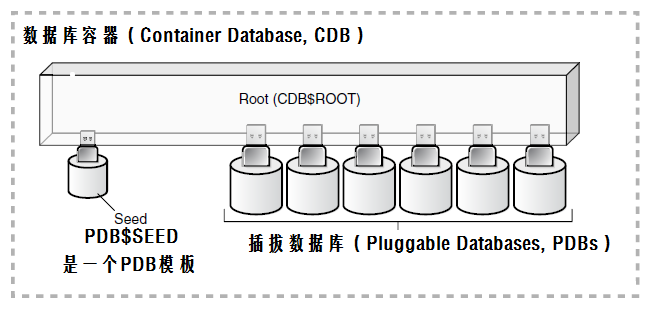
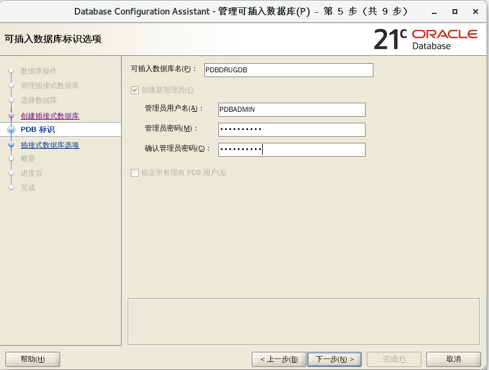
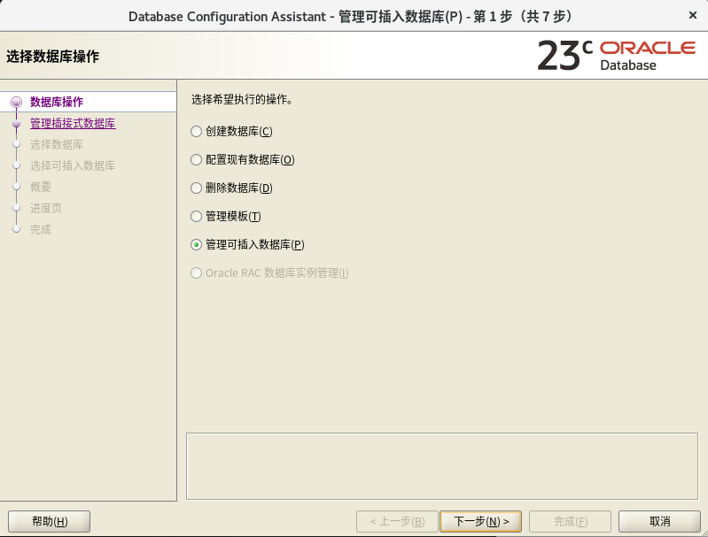
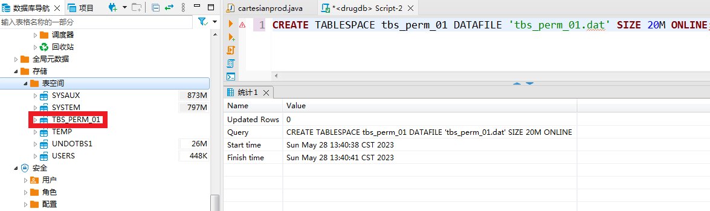

本科教学-数据库技术及应用(REDHAT8X/CENTOS8X环
境)
上机过程如有问题请看 oracle出 错集锦
Oracle上机练习一： 关系数据库Oracle 21c/23c基础及基本操作
一 上机内容:
https://www.cnblogs.com/qingmuchuanqi48/p/10579951.html
1. Oracle 数据库简介: 21c/23c
(> 19.3.000)
2. 练习ORACLE DB基本操作: DDL, DCL,
DML
3. 图形界面管理Oracle: SQL
Developer, MyEclipse2021和Eclipse2023管理Oracle数据库
4.
在MyEclipse中用JAVA语言进行简单的数据库访问以及基于tomcat的web前后端数据库技术(tomcat:
localhost:9875)
5.
在VSCode中用GO语言访问Oracle数据库(MyEclipse的goeclipse似乎不好用)
6.
采用python的cx_Oracle访问Oracle数据库（pycharm or VSCode）
7. 拓展: c/c++访问oracle12(三种方式)
二 上机目的:
1. 了解关系数据库基本结构并加深对关系数据库的理解.
2. 练习关系查询语言sql.
3.
学会命令行和图形界面创建表，主键，外键，索引，视图等。
4.初步掌握利用高级语言与数据库进行交互.
高级拓展部分：
三 利用MyEclipse进行调试java语言及数据库访问.
四 利用Eclipse进行调试CPP语言及数据库访问.
五 利用VSCode进行调试GOLANG语言及数据库访问.
1.1 Oracle 数据库简介
Oracle数据库系统， Oracle Database,又名Oracle
RDBMS，或简称Oracle.Oracle是美国Oracle（甲骨文）公司提供的以分布式数据库为核心的一组软件产品，是目前最流行的客户/服务器
（Client/Server，C/S）或浏览器/服务器（Browser/Server，B/S）体系结构的数据库之一。
Oracle数据库是目前世界上使用最为广泛的数据库管理系统，系统可移植性好、使用方便、功能强，适用于各类大、中、小、微机环境。是
一种高效率、可靠性好的 适应高吞吐量的数据库解决方案。
作为一个通用的数据库系统，它具有完整的数据管理功能；作为一个关系数据库，它是一个完备关系的产品；作为分布式数据库它实现了分布式处理功能。
2015年06月，Oracle数据库发布 Oracle Database
12c, 引入新的多承租方架构，用该架构可轻松部署和管理数据库云。此外，一些创新特性可最大限度地提高资
源使用率和灵活性，如Oracle Multitenant可快速整合多个数据库，而Automatic Data
Optimization和Heat Map能以更高的密度压缩数据和对数据分层。
Oracle的技术进步再加上在可用性、安全性和大数据支持方面的主要增强，使得Oracle数据库
12c 成为私有云和公有云部署的理想平台。
Oracle数据库结构
Oracle数据库的体系结构包括四个方面：
数据库的物理结构：由构成数据库的操作系统文件组成，包括，
数据文件（Data File，存储数据库中的数据，如表的数据和索引数据.文件名为*.dbf）；
重做日志文件（Redo Log File，记录数据库所做的全部变更如增加、删除、修改、以便系统发生故障时，
用于数据库恢复，文件名为Log*.dbf）；
归档日志文件;
控制文件（Control File，记录数据库的物理结构，如数据库名、数据库的数据文件和日志文件的名
字和位置等信息，用于打开、存取数据库,
alter system set
control_files='路径'。V$CONTROLFILE。）；
配置文件（记录Oracle数据库运行时的一些重要参数，如数据块的大小，内存
结构的配置等，文件名为init*.ora）
逻辑结构：描述数据库逻辑上如何存储数据库的数据。逻辑结构包括表空间、段、区、数据块和模式对象；
一个数据库从逻辑上说是由一个或多个表空间所组成，表空间是数据库中物理编组的数据仓库，每一个表空间是由段(segment)
组成，一个段是由一组区(extent)所组成，一个区是由一组连续的数据库块(database
block)组成，而一个数据库块对应硬盘上的一个或多个物理块。一个表空间存放一个或多个数据库的物理文件（即数据文件）.一个数据库中的数据被逻辑地
存储在表空间上。
内存结构：
进程：
表空间Tablespace:存储结构中的最高层结构。
建立一个表空间时，要指定存储的文件。一个表空间可以指定多个数据文件，多个文件
可以在不同的物理存储上。也就是说，表空间是可以跨物理存储的。
Oracle数据库被划分为一个或多个称为表空间的逻辑结构，包括System表空间和非
System表空间;
System表空间是安装数据库时自动建立的，包含数据库的全部数据字典，存储过程、包、函数和触发器的定义以及系统回滚段,
还能包含用户数据;
表空间下一级对象数据段的存储，是不能指定存储在那个文件里的。所以，要想让数据对象访问IO负载均衡，需要指定不同的数
据对象在不同的表空间里。这也就是为什么将数据表和索引建立在不同的表空间的原因。
表空间通过v$tablespace进行访问
SQL> select * from v$tablespace;
其中两个参数需要注意一下。
一个是bigfile，是一个标志位，标志表空间是不是所谓的大文件表空间。
大文件表空间是在10g中推出的一个新特性，处于性能考虑，可以设置表空间为大文件表空间，存储超过百T的数据，但是要求数据
文件只能 有一个。
另一个是flashback_on，表示表空间的闪回特性是否开启。
还有 dba_tablespaces 、 user_tablespaces。
Oracle表段中的高水位线HWM
ORACLE
用HWM来界定一个段中使用的块和未使用的块
当我们创建一个表时,ORACLE就会为这个对象分配一个段.在这个段中,即使我们未插入任何记录,也至少有一个区被分配,第一个区的第一个块就称为段头(SEGMENT
HEADE),段头中就储存了一些信息,HWM的信息就存储在此.
我们不断插入数据时,HWM会往不断上移,这样,在HWM之下的,就表示使用过的块,HWM之上的就表示已分配但从未使用过的块.
它由至少一个表空间和数据库模式对象组成。
模式是对象的集合，而模式对象是直接引用数据库数据的逻辑结构。
模式对象包括这样一些结构:表、视图、序列、存储过程、同义词、索引、簇和数据库链等。
逻辑存储结构包括表空间、段和范围，用于描述怎样使用数据库的物理空间。
总之,逻辑结构由逻辑存储结构(表空间,段,范围,块)和逻辑数据结构(表、视图、序列、存储过程、同义词、索引、簇和数据库链
等)组成,而其中的模式对象(逻辑数据结构)和关系形成了数据库的关系设计。
Oracle几个默认用户
安装 Oracle 数据库时会自动创建以下管理用户帐户
SYS
主要用于维护数据库系统信息和管理示例的，属于系统级别的用户
SYSTEM
默认的数据库管理员，拥有Oracle管理工具所使用的内部表和视图，以及可以管理所有用户、权限和存储等
SYSBACKUP, SYSDG, SYSKM
Scott: oracle第一个雇员，现在作为示例用户，会有一些示例表供用户练习使用Oracle数据库。
关于引擎：
oracle中不存在引擎的概念，数据处理可分两大类：
联机事务处理OLTP（on-line transaction processing）：OLTP
是传统的关系型数据库的主要应用，主要是基本的、日常的事务处理，例如银行交易。
OLTP 系统强调数据库内存效率，强调内存各种指标的命令率，强调绑定变量，强调并发操作；
联机分析处理OLAP（On-Line Analytical Processing）：OLAP是数据仓
库系统的主要应用，支持复杂的分析操作，侧重决策支持，并且提供直观易懂的查询结果。
OLAP 系统则强调数据分析，强调SQL执行市场，强调磁盘I/O，强调分区等。
准备工作: 上机可能会用高级语言如C、C++, java和GO语言访问ORACLE数据库, 相关环境列于下表中:
操作系统: REDHAT/CENTOS 8.X
|
操作系统: WIN11 (git shell bash) |
软件版本：Oracle 23C
|
Oracle 23c
|
DB管理界面: MyEclipse
|
DB管理界面: MyEclipse |
启动服务: CENTOS采用命令行方式
|
启动服务: win11 可在服务中设为自动启动
|
安装oracle-instantclient(19.19):
[root@PC201-10-002 oci19]# rpm -vih
oracle-instantclient19.19-basic-19.19.0.0.0-1.x86_64.rpm
[100%]
[root@PC201-10-002 oci19]# rpm -vih
oracle-instantclient19.19-devel-19.19.0.0.0-1.x86_64.rpm
[100%]
[root@PC201-10-002 oci19]# rpm -vih
oracle-instantclient19.19-jdbc-19.19.0.0.0-1.x86_64.rpm
[100%]
[root@PC201-10-002 oci19]# rpm -vih
oracle-instantclient19.19-odbc-19.19.0.0.0-1.x86_64.rpm
[100%]
[root@PC201-10-002 oci19]# rpm -vih
oracle-instantclient19.19-sqlplus-19.19.0.0.0-1.x86_64.rpm
[100%]
[root@PC201-10-002 oci19]# rpm -vih
oracle-instantclient19.19-tools-19.19.0.0.0-1.x86_64.rpm
[100%] |
|
上机操作部分
一 ORACLE DB基本操作
练习目的：学习启动linux版的oracle 21c/23c
1.1 启动监听
$ cd /opt/oracle/product/23c/dbhomeFree/bin/
$ ./lsnrctl start
看到以下信息： 命令执行成功!
LSNRCTL for Linux: Version 23.0.0.0.0 - Production on 07-3月 -2024
02:08:55
Copyright (c) 1991, 2023, Oracle. All rights reserved.
启动/opt/oracle/product/23c/dbhomeFree/bin/tnslsnr: 请稍候...
TNSLSNR for Linux: Version 23.0.0.0.0 - Production
系统参数文件为/opt/oracle/product/23c/dbhomeFree/network/admin/listener.ora
写入/opt/oracle/diag/tnslsnr/localhost/listener/alert/log.xml的日志信息
监听:
(DESCRIPTION=(ADDRESS=(PROTOCOL=tcp)(HOST=localhost)(PORT=1521)))
监听: (DESCRIPTION=(ADDRESS=(PROTOCOL=ipc)(KEY=EXTPROC1521)))
正在连接到
(DESCRIPTION=(ADDRESS=(PROTOCOL=TCP)(HOST=localhost)(PORT=1521)))
LISTENER 的 STATUS
------------------------
别
名
LISTENER
版
本
TNSLSNR for Linux: Version 23.0.0.0.0 - Production
启动日
期
07-3月 -2024 02:08:58
正常运行时
间
0 天 0 小时 0 分 1 秒
跟踪级
别
off
安全
性
ON: Local OS Authentication
SNMP
OFF
默认服务
FREE
监听程序参数文件
/opt/oracle/product/23c/dbhomeFree/network/admin/listener.ora
监听程序日志文件
/opt/oracle/diag/tnslsnr/localhost/listener/alert/log.xml
监听端点概要...
(DESCRIPTION=(ADDRESS=(PROTOCOL=tcp)(HOST=localhost)(PORT=1521)))
(DESCRIPTION=(ADDRESS=(PROTOCOL=ipc)(KEY=EXTPROC1521)))
服务摘要..
服务 "FREE" 包含 1 个实例。
实例 "FREE", 状态 UNKNOWN, 包含此服务的 3 个处理程序...
命令执行成功
1.2 sqlplus基本操作：
Sqlplus两个基本命令：
/ 和 run: 都可以执行上一句命令，重复上一句，不用再次输入整句。
run会显示缓冲区内容后再执行缓冲区的命令, /直接执行命令，不显示。
SQLPlus编辑命令表
命令
|
缩写
|
命令作用
|
|
Append text
|
A text
|
追加文本到语句，即为当前行追加text内容
|
|
Change/oldtext/newtext
|
C/oldtext/newtext
|
替换文本，将当前行中的oldtext换成新的newtext, 如果不提供
newtext表示删除oldtext
|
|
n text
|
|
修改文本：其中的n为缓冲区的行号，text为修改后的内容
|
|
DEL n
|
|
删除行号为n的行，删除的是缓冲区中的语句
|
|
CLEAR BUFFER
|
CL BUFF
|
清空缓冲区内容
|
|
Input text
|
I text
|
增加一行或多行
|
|
LIST
|
L /LI /LIS
|
显示缓冲区内容，即显示所有行
|
|
LIST n
|
L n 或 n
|
显示缓冲区内容：显示第n行
|
|
LIST *
|
L *
|
显示缓冲区内容：显示当前行
|
|
LIST LAST
|
LAST
|
显示缓冲区内容：显示最后一行
|
|
LIST m n
|
L m n
|
显示缓冲区内容：从m行到n行
|
|
n
|
|
把第n行设置为当前行
|
|
练习：
用SQLPLUS进入界面：
输入以下命令练习上表中的基本操作：
SQL> show user
USER 为 "SYS"
SQL> show pdbs
SQL>alter pluggable databse PDBDRUGDB OPEN;
SQL> conn as sysdba
请输入用户名: sys
输入口令:
已连接到空闲例程。
SQL> show user
USER 为 "SYS"
SQL> disc
已断开连接
SQL> show user
USER 为 ""
SQL>alter pluggable databse PDBDRUGDB //会报错
list
change/batabse/database
LIST
SQL>alter pluggable
sql>databse
sql>PDBDRUGDB
2 //
change/batabse/database
a open //add text
add where
del 5
2
a 55
li
SQL>edit //打开一个文本编辑器窗口，
显示缓冲区代码，可以修改后用菜单：save保存
sql> a open; //用List, 附加命令
sql> save test.sql //可以用save sss.sql
create, save sss.sql append, save ww.sql
replace,
sql>get test.sql //看看有没有变化？？？
sql@test.sql //或用： start test.sql
sql>spool on // spool off, spool out
SQLPLUS中设置环境变量:
set serveroutput on | off
set echo on | off
set pagesize n // 设置每面行数，缺省为14行，可设为0表示不分页
set linesize n //设置每行字符数，缺少为80个
set feedback on | off | n //设置脚注，查询返回多少行会有提示； n表示自定义多少行提示
sql>desc v$log //显示表结构
column用法：控制输出格式：
column 列名 format 格式；
column BYTES heading by; 将字段名改为by输出显示，设置别名
column NETXT_CHANGE# format 9; // col xxx for 999;
column NETXT_CHANGE# format a3; //取消格式：column
NETXT_CHANGE# clear;
remark 'test now'
help
自定义变量：
sql> select * from v$log where CON_ID='&conid';
//会提示用户输入相应的信息
sql> select * from v$log where
CON_ID='&&conid';
//只需输入一次，以后再用到这个变量就无需再输入了。
define
SQL>DEFINE
//不带参数，会显示所有定义好的变量，包括用&定义的变量
SQL>DEFINE conid ="9999" //使用时仍用：
&conid, 不用时删除： undefine
conid
SQL>@test.sql 10 2000 //可以命令行输入两个参数， 在sql文件中直接用:
&1, &2, 分别用于获取参数：
如，将SQL语句 select * from v$log where conid = &1 and groupid =
&2 存为test.sql,
SQL>@test.sql 10 2000 //这样运行就可以获得参数了。
使用accept prompt:
SQL> ACCEPT A NUMBER PROMT MYNUMBERIS:
//会提示输入数，然后sql> define即可看到定义的变量及值了。
登陆oracle启动数据库及关闭数据库（命令行方式）：
$ sqlplus "/nolog"
SQL> show user
USER 为 ""
$ sqlplus "/as sysdba" //当前用户要在dba组中
SQL> show user
USER 为 "SYS"
命令行方式一
$ ./sqlplus /nolog
SQL*Plus: Release 23.0.0.0.0 - Production on 星期四 3月 7
03:02:46 2024
Version 23.3.0.23.09
Copyright (c) 1982, 2023, Oracle. All rights
reserved.
SQL> conn as sysdba
请输入用户名: sys
输入口令:
已连接到空闲例程。
(表示数据库实例关闭，需要用：
SQL>startup启动)
SQL> startup //启动ORACLE 例程,装载数据库。
SQL> conn as sysdba
请输入用户名: sys
输入口令:
已连接。(数据库实例已启动)
SQL> shutdown immediate;
数据库已经关闭。
已经卸载数据库。
ORACLE 例程已经关闭。
|
命令行方式二:
如按照方式一成功启动数据库实例（即：SQL> startup）
则可以直接用命令：
$ ./sqlplus system/passwd
SQL*Plus: Release 23.0.0.0.0 - Production on 星期四 3月 7
03:09:38 2024
Version 23.3.0.23.09
Copyright (c) 1982, 2023, Oracle. All rights reserved.
上次成功登录时间: 星期四 3月 07 2024 02:54:04 -05:00
连接到:
Oracle Database 23c Free Release 23.0.0.0.0 - Develop,
Learn, and Run for Free
Version 23.3.0.23.09
SQL> startup （试一试这个？？？）
ORA-01031: 权限不足
ORA-01078:
处理系统参数失败
这是因为数据库已经开启了
SQL> shutdown immediate;
ORA-01031: 权限不
足
目前system用户没有sysdba权限
SQL> conn as sysdba
请输入用户名: sys
输入口令:
已连接。
SQL> shutdown immediate;
数据库已经关闭。
已经卸载数据库。
ORACLE 例程已经关闭。
|
命令行方式三
$ ./sqlplus
请输入用户名: system
输入口令:
上次成功登录时间: 星期四 3月 07 2024 03:09:38 -05:00
连接到:
Oracle Database 23c Free Release 23.0.0.0.0 - Develop,
Learn, and Run for Free
Version 23.3.0.23.09
SQL> exit ///从 Oracle Database 断开
(base) [catalyst@localhost bin]$ ./sqlplus
SQL*Plus: Release 23.0.0.0.0 - Production on 星期四 3月 7
03:15:39 2024
Version 23.3.0.23.09
Copyright (c) 1982, 2023, Oracle. All rights reserved.
请输入用户名: sys as sysdba
输入口令:
连接到:
Oracle Database 23c Free Release 23.0.0.0.0 - Develop,
Learn, and Run for Free
Version 23.3.0.23.09
|
命令行方式4
$ sqlplus / as sysdba
SQL*Plus: Release 21.0.0.0.0 - Production on 星期四 4月 18
14:58:53 2024
Version 21.3.0.0.0
Copyright (c) 1982, 2021, Oracle. All rights reserved.
已连接到空闲例程。
SQL> startup
ORACLE 例程已经启动。
Total System Global Area 4932500048 bytes
Fixed Size
9697872 bytes
Variable Size
956301312 bytes
Database Buffers 3959422976 bytes
Redo Buffers
7077888 bytes
数据库装载完毕。
数据库已经打开。
|
1.3 Oracle数据库基本操作：
SQL>SELECT * FROM v$version; //查看数据库版本
容器数据库CDB和可热插拔数据库PDB
SQL>SHOW PDBS;
自从Oracle 12C后，引入了新特性多租用户环境（Multitenant
Environment），允许一个数据库容器:CDB(Container
Database)承载多个可插拔数据库:PDB(Pluggable Database)。在Oracle
12C之前，实例与数据库是一对一或多对一关系(RAC), 而不能实现一对多的关系。在Oracle
12C中，基于多租用户环境这一新特性，实现了实例与数据库的一对多关系。 下图是官方文档给出的CDB与PDB的关系图。Oracle
12c-19C: 出现Multitenant Architecture多租户框架，
Oracle采用的是多租户数据库环境（Multitenant Container Database）,
两个最重要的概念需要清楚，即：
1. 容器数据库（CDB,multitenant container database）:
就是之前的数据库，只是被分成几部分，每部分（即PDB）都能做为一个总体（数据库）对外独立提供服务，就像多个之前传统的非容器数据库。
2. 可热插拔数据库（pluggable databases，PDB）:
一系列Schema的集合，从用户和应用看来是一个逻辑上独立的数据库。在物理角度上，实例和全部数据库文件都属于容器数据库
(CDB)的。
把CDB想象成一个大的容器，它在物理上是一个总体，在这个大的容器中还有一些小的容器PDB。容器的目的是将Oracle固有元
数据和用户数据（包括用户元数据）隔离。

CDB组成示意图
从上图可以看到，CDB由三部分组成
1.Root,即CDB$ROOT，存储数据库系统元数据和公用数据，Oracle不建议在CDB$ROOT下修改和创建任何数据，一个CDB有
且只有一个root.
2.seed,即PDB$SEED，它是一个PDB模板，PDB都是基于此模板创建，一个CDB只有一个PDB$SEED
3.PDBs,每个PDB都可看做一个单独的数据库，所有的PDB都属于CDB$ROOT，一个CDB可以有多个PDB。
练习创建/删除数据库
1. 图形界面法:
#dbca //直接调用 Database Configuration Assistant
可以创建CDB和PDB，也可以删除数据库。
oracle创建数据库: CDB库
1. oracle自带功能: dbca 图形界面
3 创建PDB数据库 PDBDRUGDB dba: PDBADMIN
pass: WTSgyh1972
#dbca (oracle 23c can't create PDB by dbca???)
click next:
sys / wtsgyh1972
click next:
click next:
PDBDRUGDBxxx, PDBADMIN / WTSgyh1972 (note the
password)

next:
next
next:
next:
3 删除PDB数据库
#dbca

点击下一步：输入管理员SYS及其密码：wtsgyh1972
点击下一步：
点击下一步：
点击下一步：
2. 命令行方式手工创建Oracle数据库(ssh连接，没有图形终端 or dbca图形界面无法出现)
#查看Oracle软件带的通用模 板
$ ls
/opt/app/oracle/product/12.2.0/dbhome_1/assistants/dbca/templates/*.dbc
/opt/app/oracle/product/12.2.0/dbhome_1/assistants/dbca/templates/Data_Warehouse.dbc
数据仓库型模板
/opt/app/oracle/product/12.2.0/dbhome_1/assistants/dbca/templates/General_Purpose.dbc
一般通用型模板
Oracle用户下执行建库命令:
dbca -silent -createDatabase
-templateName General_Purpose.dbc -gdbName demo -sid demo
-sysPassword oracle -systemPassword oracle -datafileDestination
/home/oracle/oradata/ -characterSet zhs16gbk -nationalCharacterSet
al16utf16 -responseFile NO_VALUE
会提示进程，等待到100%，建库完成
建库参数表及解析
参数序号
|
参数名
|
参数作用
|
1
|
-silent
|
安静模式创建数据库
|
2
|
-createDatabase |
创建数据库
|
3
|
-templateName General_Purpose.dbc |
使用通用模板
|
4
|
-gdbName biodb
|
库名称
|
5
|
-sid biodb
|
实例名称
|
6
|
-sysPassword biodbhust123
|
SYS用户及密码
|
7
|
-systemPassword biodbhust123 |
SYSTEM用户及密码 |
8
|
-datafileDestination /opt/app/oracle/oradata
|
数据文件存放目录
|
9
|
-characterSet zhs16gbk |
字符集为
|
10
|
-nationalCharacterSet al16utf16 |
|
11
|
-responseFile NO_VALUE |
|
二 SQL语言操作练习:
2.1 DDL(Data Definition Language): CREATE, DROP, ALTER
2.1.1 定义模式: oracle不支持创建模式
///试一试？
SQL>create schema testschema
authorization system;
SQL>create schema "testschema"
authorization system;
SQL>create schema testschema authorization
c##biodbuser
//用户有dba权限或DBA授权create schema
SQL>create schema authorization
c##biodbuser //不指定模式名
SQL>create schema testschema authorization
c##biodbuser create table student(sno varchar2(10), sname
varchar2(20));
以上命令是不是不行？？？那试一试下面的命令：
在oracle中可以创建用户，实际上定义一个命令名空间, 在其中可定义该模式所包含的数据对象, 如基本表, 视图, 索引等
练习创建用户：
SQL>CREATE USER c##hustdbuser IDENTIFIED BY wtsgyh1972; //ORACLE
中CREATE USER就创建了一个schema
SQL>GRANT CONNECT, RESOURCE TO c##hustdbuser;
//授权 schema用户c##biodbuser连 接到数据库，并使用资源
删除模式: 在oracle中其实就是删除用户
///// drop schema testschema restrict; //这个命令不适合oralce
//////
drop schema testschema cascade; //级联删除将模式及其中所有对象一并删除，
这个命令不适合oralce
oracle 用法:
SQL>drop user; //仅是删除用 户
SQL>drop user
cascade; //会删除此用
户名下的所有表和视图
Oracle为兼容以前的版本，提供了用户的三种标准角色：connect、resource和dba
三种作用分别是：
connect（连接角色）：只可登录Oracle，不可创建实体，也不可创建数据库结构，即只能对其他人创建的表中的数据进行操作。
resource(资源角色): 可创建实体，但是不可以创建数据库结构。
可创建表、序列（sequence）、运算符(operator)、过程(procedure)、触发器(trigger)、索引(index)、类型
(type)和簇(cluster)。
dba（数据库管理员权限）：拥有系统最高权限，只有DBA才可以创建数据库结构，包括无限制的空间限额和给其他用户授予各种权限的能
力，system由dba用户拥有。
对于普通用户，授予connect和resource权限即可，只对dba授予connect、resource和dba权限。
授权：
sql>grant connect,resource to xxxuser;
sql<revoke connect,resource from xxxuser;
除了三种系统角色，用户还可以自己创建角色，创建的角色可以由表或系统权限或者两者的组合构成。
角色相关语法：
sql>create role xxxrolename;
sql>grant 权限 on 表名 to xxxxrolename;
sql>grant select on mytable to xxxxrolename;
sql>grant create session to xxxrolename;
sql>drop role xxxrolename;
概要文件: profile
Oracle系统中
的profile可以用来对用户所能使用的数据库资源进行限制，使用Create Profile命
令创建一个Profile，用它来实现对数据库资源的限制使用，如果把该profile分
配给用户，则该用户所能使用的数据库资源都在该profile的限制之内。
PROFILE(SEE ERROR COLLECTIONS)
CDB中创建Profile
SQL>create profile
c##new_profile limit password_reuse_max 10
password_reuse_time 30;
SQL> show con_name;
CON_NAME
CDB$ROOT
SQL>CREATE PROFILE
test_a LIMIT SESSIONS_PER_USER
UNLIMITED CPU_PER_SESSION
UNLIMITED CPU_PER_CALL 3000 CONNECT_TIME 45 LOGICAL_READS_PER_SESSION DEFAULT LOGICAL_READS_PER_CALL 1000 PRIVATE_SGA 15K
OMPOSITE_LIMIT 5000000;
SQL>CREATE
PROFILE c##test_b LIMIT SESSIONS_PER_USER UNLIMITED
CPU_PER_SESSION UNLIMITED CPU_PER_CALL 3000
CONNECT_TIME 45
LOGICAL_READS_PER_SESSION DEFAULT
LOGICAL_READS_PER_CALL 1000 PRIVATE_SGA 15K
COMPOSITE_LIMIT 5000000;
Profile created.
SQL> select distinct profile from dba_profiles;
PROFILE
--------------------------------------------------------------------------------
ORA_STIG_PROFILE
ORA_CIS_PROFILE
DEFAULT
C##NEW_PROFILE
SQL> drop profile c##test_b; //删除
SQL> create user c##test identified by
CCCC;
User created.
SQL> alter user c##test profile c##test_b;
User altered.
SQL> col username for a15
SQL> col profile for a25
SQL>
select t.username,T.profile from dba_users t where
t.username='C##BIODBUSER';
USERNAME PROFILE
--------------- -------------------------
C##BIODBUSER DEFAULT
以下的示例均在PDB中执行
PDB中创建用户并指定CDB中创建的profile
SQL> alter session set container=PDBDRUGDB;
Session altered.
SQL> create user BIODBUSER identified by wtsgyh1972;
User created.
SQL> alter user BIODBUSER profile c##test_b;
User altered.
SQL> ALTER PLUGGABLE DATABASE PDBDRUGDB OPEN;
插接式数据库已变更。
SQL> conn / as sysdba
已连接。
SQL> select t.username,T.profile from dba_users t where
t.username='BIODBUSER';
USERNAME PROFILE
--------------- -------------------------
BIODBUSER C##TEST_BALTER PLUGGABLE DATABASE
PDBDRUGDB OPEN;
2.1.2 创建表空间和表：
表 空间创建及删除：
1. Permanent Tablespace
2. Temporary Tablespace
3. Undo Tablespace
1 - PERMANENT TABLESPACE
CREATE TABLESPACE
tablespacename DATAFILE '<file_path>' SIZE <size> AUTOEXTEND ON; //如果需要创建表空间，可用本SQL语句
创建一个简单的表空
间：permanent tablespace
CREATE TABLESPACE tbs_perm_01 DATAFILE 'tbs_perm_01.dat' SIZE 20M
ONLINE;

创建一个永久性 的表空间,
并且可以自动增加空间(下面一句表示自动增加10M直到达到 200MB)
CREATE TABLESPACE tbs_perm_02 DATAFILE 'tbs_perm_02.dat' SIZE 10M
REUSE AUTOEXTEND ON NEXT 10M MAXSIZE 200M;
下 面一句表示: 创建一个BIGFILE
永久性表空间, 需要更多空间时自动增加空间:
CREATE BIGFILE TABLESPACE tbs_perm_03 DATAFILE 'tbs_perm_03.dat'
SIZE 10M AUTOEXTEND ON;
2 - TEMPORARY TABLESPACE
CREATE TEMPORARY TABLESPACE tbs_temp_01 TEMPFILE 'tbs_temp_01.dbf'
SIZE 5M AUTOEXTEND ON;
3 - UNDO TABLESPACE：用于管理undo数据，即如果Oracle
database正运行在自动UNDO管理模式(automatic undo management mode)
CREATE UNDO TABLESPACE tbs_undo_01 DATAFILE 'tbs_undo_01.f' SIZE 5M
AUTOEXTEND ON RETENTION GUARANTEE;
3.创建表：
SQL>conn c##biodbuser/biodb123@biohustdb; sql>CREATE TABLE
biodbstd( STD_ID NUMBER NOT NULL, STD_NAME VARCHAR2(100) NOT NULL,
STD_NUM VARCHAR2(50) NOT NULL,STD_MAJOR VARCHAR2(50) NOT NULL,
STD_PASSWORD VARCHAR2(200), STD_RECORDS NUMBER NOT NULL);
如果： 第 1 行出现错误: ORA-01031: 权限不足 (need:
SQL> conn as sysdba
请输入用户名: sys
输入口令:
已连接。
SQL> alter user c##biodbuser account unlock;
然后再次运行：
sql>CREATE TABLE biodbstd( STD_ID NUMBER NOT NULL, STD_NAME
VARCHAR2(100) NOT NULL, STD_NUM VARCHAR2(50) NOT NULL,STD_MAJOR
VARCHAR2(50) NOT NULL, STD_PASSWORD VARCHAR2(200), STD_RECORDS
NUMBER NOT NULL);
表已创建。
SQL>INSERT INTO biodbstd
VALUES('2021002','李子晨','U202112156','生物信息学202101班','U202112156','1000');
已创建 1 行。
SQL> conn c##biodbuser/biodb123@biohustdb
已连接。
SQL> CREATE TABLE biodbstd( STD_ID NUMBER NOT NULL, STD_NAME
VARCHAR2(100) NOT NULL, STD_NUM VARCHAR2(50) NOT NULL,STD_MAJOR
VARCHAR2(50) NOT NULL, STD_PASSWORD VARCHAR2(200), STD_RECORDS
NUMBER NOT NULL);
CREATE TABLE biodbstd( STD_ID NUMBER NOT NULL, STD_NAME
VARCHAR2(100) NOT NULL, STD_NUM VARCHAR2(50) NOT NULL,STD_MAJOR
VARCHAR2(50) NOT NULL, STD_PASSWORD VARCHAR2(200), STD_RECORDS
NUMBER NOT NULL)
*
第 1 行出现错误: ORA-01031: 权限不足
SQL>grant create table to c##biodbuser; //授予创建表的权限
授权成功。
SQL>grant insert table to c##bodbuser;//插入表的权限
SQL> conn as sysdba
请输入用户名: sys
输入口令:
已连接。
SQL> grant create table to c##biodbuser;
SQL> show user
USER 为 "SYS"
SQL> conn c##biodbuser/biodb123@biohustdb
conn C##BIODBUSER/biodb123@BIOHUSTDB
已连接。
SQL> conn c##biodbuser
输入口令:
已连接。
SQL> show user
USER 为 "C##BIODBUSER"
SQL> CREATE TABLE biodbstd( STD_ID NUMBER NOT NULL, STD_NAME
VARCHAR2(100) NOT NULL, STD_NUM VARCHAR2(50) NOT NULL,STD_MAJOR
VARCHAR2(50) NOT NULL, STD_PASSWORD VARCHAR2(200), STD_RECORDS
NUMBER NOT NULL);
表已创建。
SQL> CREATE TABLE drugdbuser( STD_ID NUMBER NOT NULL, STD_NAME
VARCHAR2(100) NOT NULL, STD_NUM VARCHAR2(50) NOT NULL,STD_MAJOR
VARCHAR2(50) NOT NULL, STD_PASSWORD VARCHAR2(200), STD_RECORDS
NUMBER NOT NULL);
表已创建。
ORA-00990: 权限缺失或无效
SQL> grant unlimited tablespace to C##BIODBUSER;
授权成功。
NOW:
INSERT INTO "C##BIODBUSER"."BIODBSTD"
VALUES('2021002','李子晨','U202112156','生物信息学202101班
','U202112156','1000'); //FOR: C##BIODBUSER can insert
to table of : "C##BIODBUSER"."BIODBSTD"
练习：
创建一个student表空间，指定数据文件为/opt/app/admin/oradata/biohustdb/student.dbf
//表空间是自
动扩展的，每次自动扩展大小为10M，最大扩展到500M，创建的是永久表空间，用来存储student用户的数据库对
象和数据，管理模式为本地管理。
SQL>create tablespace
student datafile '/opt/app/admin/oradata/biohustdb/student.dbf'
size 100m autoextend on next 10m maxsize 500m permanent extent
management local;
通过查看数据字典dba_data_files和
dba_tablespaces，可对表空间进行查询，查询代码如下：
SQL>select t.TABLESPACE_NAME, -- 表空间名
t.FILE_NAME, --
文件名
t.AUTOEXTENSIBLE, --
是否自动扩展
t.BYTES / 1024 / 1024, --
表空间初始大小
t.MAXBYTES /
1024 / 1024, --表空间最大扩展到多少
b.CONTENTS, --
表空间类型
b.EXTENT_MANAGEMENT -- 表空间管理模式
from dba_data_files t, dba_tablespaces b where t.TABLESPACE_NAME
= b.TABLESPACE_NAME
给 某个用户指定表空间
SQL> alter user erpapp default
tablespace erptbs;
2.1.3 基 本表定义,修改和删除:
注 意以下不同的创建表的方式：
a. create table reader(mo varchar2(10) primary key, name
varchar2(8) not NULL, sex char(2) check(sex='男' or sex='女'), age
smallint, dept varchar2(20)) TABLESPACE USERS;
这个只是创建了一个USERS 下的对象（用eclipse可以看到）
insert into reader
values('df','gh','2'，20，'SHKE');
//现在插入sex数据会报错，说sex的char(2)太短！！！！
Alter table reader modify(sex char(3));
insert into reader
values('df','gh','2'，20，'SHKE');
b. create table "C##BIODBUSER".reader(mo varchar2(10) primary key,
name varchar2(8) not NULL, sex char(2) check(sex='男' or sex='女'),
age smallint, dept varchar2(20)) TABLESPACE USERS;
Alter table "C##BIODBUSER".reader modify(sex
char(3)); //
insert into reader values('df','gh','2'，20，'SHKE');
//注意其中的约束条件CHECK， 将放在数据字典中.
create table books(bno varchar2(10) primary key, bname varchar2(20)
not NULL, btype varchar2(20), bauthor varchar2(8));
create table lend(bno varchar2(10), mo varchar2(10), lendtime
smallint, primary key(bno,mo),foreign key (mo) references reader
(mo), foreign key(bno) references books(bno));
//注意这里最行两行定义的外码
修改基本表: 结构修改和约束条件修改
ALTER TABLE lend ADD lenddate DATE; //新增一列
DROP TABLE lend RESTRICT; //缺省选项
DROP TABLE lend CASCADE; //无条件删除
ALTER TABLE用法：
增加字段; alter table tablename add column fieldname varchar2(2);
或者 alter table tablename add(fieldname clob);
删除字段; alter table tablename drop column fieldname;
修改字段
(修改字段名字): alter table tablename rename column oldfield to newfield;
(修改字段大小); alter table tablename modify fieldname varchar2(2000);
修改表某个字段: 把字段clob类型修改成varchar2(4000):
不能直接用命令 alter table tablename modify filedname varchar2(4000); //不同类型间转换时，要在修改的表中，先新建一个字段：
alter table tablename add newfield varchar2(4000);
其次给这个新增的字段赋值(即把原来的clob字段的值给这个新的字段，注意的如果新增的字段中接受的值要是大于4000的话，会移植失效)，
命令：
update tablename set newfield=dbms_lob.substr(oldfield,1,dbms_lob.getLength(oldfield));
以上命令执行成功后，查看表是否有数据导入到新的字段中后，然后在drop掉之前的oldfield字段(即clob字段)，
alter table tablename drop column oldfield;
把这个新增的字段换成旧字段则要执行：
alter table tablename rename column oldfield to newfield;
select * from all_tables WHERE TABLE_NAME ='reader';
//可以在eclipse中用DBEAVER 23.05K看看
select * from all_tables WHERE TABLE_NAME ='BATCH_JOB_SEQ';
//可以在eclipse中用DBEAVER 23.05K看看
select OWNER，TABLE_NAME from all_tables WHERE TABLE_NAME
='BATCH_JOB_EXECUTION_SEQ';
建立索引: 如同书的目录便于快速查看, 是对表中一列或多列的值进行排序
SQL> drop table BATCH_JOB_EXECUTION cascade constraints;
//用Drop table cascade
constraints可刪除关联BATCH_JOB_EXECUTION的constraint來达成drop
BATCH_JOB_EXECUTION的目的，原属BATCH_JOB_EXECUTION的foreign key
constraint已随着被删除掉了，但储存在table t1的资料可不会被删除.
2. QL(Query Language): SELECT
查询语句基本格式
select <column_list> from <table_name> [where
<codition>] [group by <group_by expression
>] [having <group_condition>]
[order by<col_name>]
2.0 常用函数
1. 数学函数
（1） ROUND
SQL> SELECT ROUND(3.1415926, 3) AS RoundedNumber FROM dual;
ROUNDEDNUMBER
-------------
3.142
（2）TRUNC
SQL> SELECT TRUNC(3.1415926, 3) AS TruncatedNumber FROM dual;
TRUNCATEDNUMBER
---------------
3.141
（3）ABS:绝对值
SQL> SELECT ABS(2）， ABS(-5.6), ABS(-45) FROM
dual; //dual是一张虚拟表，用于构成SELECT的语法规则
ABS(2） ABS(-5.6) ABS(-45)
---------- ---------- ----------
2
5.6 45
（4）POWER和EXP：
SQL> SELECT POWER(2,7), POWER(2,-2) FROM dual;
POWER(2,7) POWER(2,-2)
---------- -----------
128
.25
SQL> SELECT EXP(2), EXP(-2)
FROM dual;
EXP(2) EXP(-2)
---------- ----------
7.3890561 .135335283
（5）MOD
SQL> SELECT MOD(20,7), MOD(199,8) FROM dual;
MOD(20,7) MOD(199,8)
---------- ----------
6 7
（6）SQRT：
SQL> SELECT ABS(2), SQRT(9), SQRT(144) FROM dual;
ABS(2) SQRT(9)
SQRT(144)
---------- ---------- ----------
2
3 12
(7) 其他: 三角函数，对数等
- CEIL: 返回比输入值大的最小整数。
- FLOOR: 返回比输入值小的最大整数。
- MOD: 返回两个数值相除的余数。
2. 字符串函数
（1）lengthb/length:字符长度
SQL> SELECT lengthb('HustBio Database') FROM dual;
LENGTH('HUSTBIODATABASE')
-------------------------
16
SQL> SELECT lengthb('HustBio Database') FROM dual;
LENGTHB('HUSTBIODATABASE')
--------------------------
16
（2）SUBSTR
SQL> SELECT SUBSTR('Hust Bio Database Course',
6,3) FROM dual;
SUBSTR('H
---------
Bio
（3）INSTR: 查找字符位置
SQL> SELECT INSTR('Hust Bio Database Course',
'Bio') FROM dual;
INSTR('HUSTBIODATABASECOURSE','BIO')
------------------------------------
6
（4）CONCAT
SQL> SELECT concat('Hust Bio', 'Database Course') FROM
dual;
CONCAT('HUSTBIO','DATABASECOURSE')
---------------------------------------------------------------------
Hust BioDatabase Course
（5）REPLACE
SQL> SELECT REPLACE('Hust Bio Database Course', 'Bio',
'life') FROM dual;
REPLACE('HUSTBIODATABASECOURSE','BIO','LIFE')
---------------------------------------------------------------------------
Hust life Database Course
（6）TRIM, LTRIM, RTRIM: rtrim剪切字符及其右侧字符、 lrtrim
剪切字符及其左侧字符、
SQL> SELECT LTRIM('Hust Bio Database Course',
'Bio') FROM dual;
LTRIM('HUSTBIODATABASECOURSE','BIO')
------------------------------------------------------------------------
Hust Bio Database Course
SQL> SELECT RTRIM('Hust Bio
Database Course', 'Course') FROM dual;
RTRIM('HUSTBIODATABASECOURSE','COURSE')
------------------------------------------------------
Hust Bio Database
SQL> SELECT TRIM('H' FROM 'Hust Bio Database
Course') FROM dual;
TRIM('H'FROM'HUSTBIODATABASECOURSE')
---------------------------------------------------------------------
ust Bio Database Course
（7）ASCII
SQL> sELECT ASCII('A') FROM dual;
ASCII('A')
----------
65
（8）NVL
SELECT job_id, NVL(department_name, 'Unknown Department')
FROM employees e LEFT JOIN departments d ON e.department_id =
d.department_id;
（9）INITCAP,LOWER,UPPER: 首字母大写,转
化为小写,转化为大写
SQL> SELECT INITCAP('hust Bio Database
course') FROM dual;
INITCAP('HUSTBIODATABASECOURSE')
------------------------------------------------------------------------
Hust Bio Database Course
SQL> SELECT LOWER('hust Bio Database
course') FROM dual;
LOWER('HUSTBIODATABASECOURSE')
------------------------------------------------------------------------
hust bio database course
SQL> SELECT UPPER('hust Bio Database
course') FROM dual;
UPPER('HUSTBIODATABASECOURSE')
------------------------------------------------------------------------
HUST BIO DATABASE COURSE
3. 日期函数
（1）CURRENT_DATE
SQL> SELECT CURRENT_DATE FROM DUAL;
CURRENT_DATE
------------------
2024:05:0703:44:14
（2）SYSDATE
SQL> SELECT SYSDATE AS CurrentDateTime FROM dual;
CURRENTDATETIME
------------------
2024:05:0703:44:37
2）ADD_MONTHS函数: 用于在日期上添加指定的月数。如在当前日期上加3个月：
SQL> SELECT ADD_MONTHS(SYSDATE, 3) AS FutureDate FROM dual;
FUTUREDATE
------------------
2024:08:0703:45:08
（3）MONTHS_BETWEEN函数
SELECT MONTHS_BETWEEN('1-1-2024', '1-5-2024') AS
MonthDifference FROM dual;
（4）TO_CHAR/TO_DATE
SQL> select to_char(current_date,'yyyy-mm-dd
hh24:mi:ss') from dual;
TO_CHAR(CURRENT_DATE,'YYYY-MM-DDHH24:MI:SS')
---------------------------------------------------------
2024-05-07 03:47:46
4. 聚合函数: 用于对数据进行聚合计算，如求和、平均数、最大值、最小值等，聚焦函数不能作为条件用在where子
句中，需要与having，group一起使用
SQL> ALTER PLUGGABLE DATABASE PDBDRUGDB OPEN;
SQL> alter session set container=PDBDRUGDB;
SQL> conn HR/wtsgyh1972@localhost:1521/PDBDRUGDB
已连接。
（1）COUNT
SQL> SELECT COUNT(*) FROM employees;
COUNT(*)
----------
109
（2）SUM
SQL> SELECT SUM(salary) FROM employees;
SUM(SALARY)
-----------
731414
（3）AVG
SQL> SELECT AVG(salary) FROM employees;
AVG(SALARY)
-----------
6710.22018
（4）MAX/MIN
SQL> SELECT MAX(salary),MIN(salary) FROM
employees;
MAX(SALARY) MIN(SALARY)
----------- -----------
24000
2100
5. 其他
（1）DECODE
Select csrq 年份, sum(decode(zm,'大洋洲',cou)) 大洋洲,
sum(decode(zm,'欧洲',cou)) 欧洲, sum(decode(zm,'亚洲',cou)) 亚洲,
sum(decode(zm,'非洲',cou)) 非洲,
sum(decode(zm,'美洲',cou)) 美洲 From ( select t.zm,substr(csrq,1,4)
csrq,Count(*) cou from employee t Group By
t.zm,substr(csrq,1,4)) Group By csrq Order By csrq;
（2）CASE
（3）ROLLUP/CUBE
（4）MD5
（5）CAST: 函数用于将一个数据类型转换为另一种数据类型
SQL> SELECT CAST('123' AS NUMBER) FROM
dual; //将一个字符串转换为数值型数据
CAST('123'ASNUMBER)
-------------------
123
（6）查询Blob/Clob类型字段
DBMS_LOB是Oracle数据库提供的一个用于操作大型对象（LOB）数据的包。其中，LOB包括四种类型：CLOB、
NCLOB、BLOB和BFILE。
DBMS_LOB包提供了一系列子程序，可以用于读取、写入、截断、复制、比较等LOB对象的操作：
DBMS_LOB.READ：用于从LOB对象中读取数据；
DBMS_LOB.WRITE：用于向LOB对象中写入数据；
DBMS_LOB.TRIM：用于截断LOB对象中的数据；
DBMS_LOB.COPY：用于将LOB对象中的数据复制到另一个LOB对象中；
DBMS_LOB.COMPARE：用于比较两个LOB对象中的数据是否相同。
DBMS_LOB包有多个内置函数：
dbms_lob.append：追加LOB值
dbms_lob.substr：截取LOB值
dbms_lob.instr：查找LOB值中的字符串位置
dbms_lob.getlength：查询Blob/Clob类型字段的长度
创建一个表：MYBCLOB;
SQL> desc MYBCLOB;
名
称
是否为空? 类型
----------------------------------------- --------
----------------------------
BCID
NOT NULL VARCHAR2(20)
WBLOB
NOT NULL BLOB
WCLOB
NOT NULL CLOB
SQL> select * from mybclob;
查询结果如下：
BCID--------------------------------------
WBLOB----------------------------------------------------WCLOB--------------------------------------------
1
646174615F324855300A23200A5F656E7472792E696420202032485530200A23200A5F6175646974
5F636F6E666F726D2E646963745F6E616D65202020202020206D6D6369665F706462782E64696320
DBMS_LOB是Oracle数据库提供的一个用于操作大型对象（LOB）数据
Select * From table_name Where
dbms_lob.instr(Column,utl_raw.cast_to_raw('内容',1,1))>0;
Oracle 导出 BLOB 数据的方法
1.使用 SQL Developer 工具
2.使用 PL/SQL 脚本
create or replace directory UTL_FILE_DIR as '/home/catalyst';
DECLARE
file_handle UTL_FILE.FILE_TYPE;
b_lob BLOB;
BEGIN
select WBLOB into b_lob from "C##BIODBUSER"."MYBCLOB"
where BCID=1;
file_handle := utl_file.fopen('UTL_FILE_DIR', 'test.txt',
'W');
utl_file.PUT_RAW(file_handle , b_lob, true);
UTL_FILE.FCLOSE(file_handle);
END;
DECLARE
l_blob BLOB;
l_bfile BFILE;
BEGIN
--
假设需要导出的 BLOB 字段名为 "blob_column"，表名为 "your_table"，条件为
"your_condition"
SELECT WBLOB INTO l_blob FROM y"C##BIODBUSER"."MYBCLOB"
where BCID=1;
--
将 BLOB 数据写入临时 BFILE
l_bfile := BFILENAME("UTL_FILE_DIR",
"test.txt");
DBMS_LOB.fileopen(l_bfile);
DBMS_LOB.loadfromblob(l_bfile, l_blob);
DBMS_LOB.fileclose(l_bfile);
--
使用 utl_file 或其他方法将 BFILE 数据导出到文件系统
END;
create or replace directory UTL_FILE_DIR as '/home/catalyst/'
错误报告 -
ORA-01031: 权限不足
01031. 00000 - "insufficient privileges"
*Cause: An attempt was made to perform a
database operation without
the
necessary privileges.
*Action: Ask your database administrator or designated
security
administrator to grant you the necessary privileges
lpad在
左侧填充特定长度、
rpad在右侧填充特定长度、
soundex、发音相似单词
substr、字符截取
chr、ascii码代表的字符
ascii、字符的ascii码
translate、字符替换
repleace、字符或字符串替换
ceil向上取整、
floor向下取整、
sqrt平方根、
power乘方、
sign数字正负、
trunc截去小数、
round四舍五入、
exp常数e的次幂、
mod余数、
ln自然对数值、
log以10为底的对数值、
vsize存储空间、
greatest一组值中的最大、
least一组值中的最大、
add_months在一个日期上加上或减去指定月份、
last_day返回指定月份的最后一天的日期、
next_day返回下一个指定日期的第一天、
months_between两个日期相隔的月份数、
trunc
日期格式：
SYEAR公元纪年、
YY年、
Q季、
MM月,
RM罗马月,
Month英文月份,
WW当年第几周,
W当月第几周,
DDD当年第几天,
DD当月第几天,
D周内第几天,
DY星期,
HH,HH12,12进制小时数
HH2424小时小时数,
MI分钟数（0~59）,
SS秒数（0~59））
to_char将日期转化为字符、
to_date将字符转化为日期、
to_number将数字转化为字符、
decode将特定数据转变成另一种表示
——组函数只能写having之后
2.1 where条件中用到的运算
+-*/
||连接
=、!=、^=、<>、>、>=、<、<=、any，some，all
not、and、or
in（相当与any）、not in（相当于!=all）
between x and y
not between x and y
is null、is not null （可使用nvl()函数将null转换成需要的值）
exist
like（_表示一个字符，%表示0个或多个字符）
若字符串中包含“_”“%”，可使用escape ‘\’，如
like ‘%s\_t%’ escape ‘\’用来匹配“s_t”字符串
集合运算符
2.2组函数
avg平均数、忽略null
count查询行数、
max最大值，忽略null、
min最小值，忽略null、
stddev标准差，忽略null、
sum总和，忽略null、
variance方差，忽略null
3. DML(Data Manipulation Language): INSERT, UPDATE,DELETE,
TRUNCATE
SQL>insert into <table_name>[col_name, col_name,
col_name,…,] values(value, value, value, value,…);
SQL>update <table_name> set
col_name=value/expression, col_name=value/expression [where
<conditions>]
SQL>delete from <table_name> [where
<condition>];
或
SQL>delete <table_name> [where
<condition>];
TRUNCATE TABLE TableName
truncate和delete的区别：
a、delete可用rollback命令进行撤销，而truncate速度快，但不可回滚，使用的时候需要注意;
b、truncate不能触发任何delete触发器;
c. truncate会删除表全部内容，但保留表结构;
d.DELETE
语句每删除一条记录都是一个事务，会产生若干"日志"。但TRUNCATE是释放整个数据页（一个页8K），truncate速度快,不可回滚;
e. truncate: 行标识的序号重置（或者可以说：新行标识 所用的计数值重置为该列的种子）.
4. DCL(Data Control Language): GRANT REVOKE
GRANT CREATE ANY INDEX TO c##biodbuser; //
GRANT ALTER ANY INDEX TO c##biodbuser;
GRANT DROP ANY INDEX TO c##biodbuser;
根据PDB$SEED创建PDB
1. 查看pdb状态
SQL> SHOW PDBS;
CON_ID CON_NAME
OPEN MODE
RESTRICTED
---------- ------------------------------ ---------- ----------
2 PDB$SEED
READ ONLY
NO <<< seed pdb
在数据库cdb启动时处于read only的状态
3 FREEPDB1
READ WRITE NO
4 WSPDB
MOUNTED
2.查看pdb$seed数据文件路径：
SQL> select name, con_id from v$datafile order by con_id;
看看输出信息，是不是有点乱？
SQL> set line 1000
SQL> col name format a100
SQL> select name, con_id from v$datafile order by con_id;
NAME
CON_ID
----------------------------------------------------------------------------------------------------
----------
/opt/oracle/oradata/FREE/system01.dbf
1
/opt/oracle/oradata/FREE/undotbs01.dbf
1
/opt/oracle/oradata/FREE/users01.dbf
1
/opt/oracle/oradata/FREE/sysaux01.dbf
1
/opt/oracle/oradata/FREE/pdbseed/sysaux01.dbf
2
/opt/oracle/oradata/FREE/pdbseed/undotbs01.dbf
2
/opt/oracle/oradata/FREE/pdbseed/system01.dbf
2
/opt/oracle/oradata/FREE/FREEPDB1/system01.dbf
3
/opt/oracle/oradata/FREE/FREEPDB1/sysaux01.dbf
3
/opt/oracle/oradata/FREE/FREEPDB1/users01.dbf
3
/opt/oracle/oradata/FREE/FREEPDB1/undotbs01.dbf
3
/opt/oracle/oradata/FREE/WSPDB/system01.dbf
4
/opt/oracle/oradata/FREE/WSPDB/sysaux01.dbf
4
/opt/oracle/oradata/FREE/WSPDB/undotbs01.dbf
4
已选择 14 行。
SQL> select name, con_id from v$tempfile order by con_id;
NAME
CON_ID
----------------------------------------------------------------------------------------------------
----------
/opt/oracle/oradata/FREE/temp01.dbf
1
/opt/oracle/oradata/FREE/pdbseed/temp01.dbf
2
/opt/oracle/oradata/FREE/FREEPDB1/temp01.dbf
3
/opt/oracle/oradata/FREE/WSPDB/temp01.dbf
4
SQL> select name from v$datafile where con_id=(select con_id from
v$pdbs where name='PDB$SEED');
结果显示：
NAME
--------------------------------------------------------------------------------
/opt/oracle/oradata/FREE/pdbseed/system01.dbf
<<< 看看这个是不是在相应的目录中？？？
/opt/oracle/oradata/FREE/pdbseed/sysaux01.dbf
/opt/oracle/oradata/FREE/pdbseed/undotbs01.dbf
2.查看pdb$seed临时文件路径：
SQL> select name from v$tempfile where con_id=(select
con_id from v$pdbs where name='PDB$SEED');
结果显示：
NAME
--------------------------------------------------------------------------------
/opt/oracle/oradata/FREE/pdbseed/temp01.dbf
注：也可以用shell命令查看pdb$seed数据存放的位置：
$ tree /opt/oracle/oradata/FREE/pdbseed/
/opt/oracle/oradata/FREE/pdbseed/
├── sysaux01.dbf
├── system01.dbf
├── temp01.dbf
└── undotbs01.dbf
Oracle 12c/19c/21c/23/c
重启后只会重启cdb，其余所有的pdb都会进入mounted状态。这个时候客户端是无法连接这个数据库的,所以还需要重新启动相应的pdb数据库。
1.3.1 查询当 前数据库名称
SQL> show
con_name
CDB$ROOT //查寻得到的是
SQL> select con_id,name,open_mode from
v$pdbs; //PDB(可
插拔式数据库):
CON_ID
NAME
OPEN_MODE
---------- ------------------------------ ----------
2
PDB$SEED
READ ONLY
3
PDBDRUGDB
READ WRITE （READ
WRITE表示数据库已经打开,即用：alter
pluggable database pdbdrugdb open;）
SQL> alter session set container=pdbdrugdb;
会话已更改。
SQL> select con_id,name,open_mode from v$pdbs;
CON_ID
NAME
OPEN_MODE
---------- ------------------------------ ----------
3
PDBDRUGDB
READ WRITE << 现在看看怎么样了??? READ
WRITE表示数据库已经打开,即用：alter
pluggable database pdbdrugdb open;）
SQL> alter pluggable database pdbdrugdb close;
插接式数据库已变更。
SQL> show con_name
CON_NAME
------------------------------
PDBDRUGDB
SQL> select con_id,name,open_mode from v$pdbs;
CON_ID
NAME
OPEN_MODE
---------- ------------------------------ ----------
3
PDBDRUGDB
MOUNTED
<<<<<<<<<<<<<（MOUNTED
表示数据
库已经关闭,即用：alter
pluggable database pdbdrugdb close;）
SQL> alter pluggable database pdbdrugdb open;
插接式数据库已变更。
SQL> select con_id,name,open_mode from v$pdbs;
CON_ID
NAME
OPEN_MODE
---------- ------------------------------ ----------
3
PDBDRUGDB
READ WRITE
<<<<<<<<<<< 数
据库又打开
SQL>create
user biodbuser identified by biodb123; 现在就可以创建没有C##的用户了.
SQL>alter user biodbuser identified by biodb123;
//ok
SQL> grant dba to biodbuser;
授权成功。
SQL> grant dba to bi_admin;
授权成功。
插接式数据库已关闭。
SQL> alter session set container=CDB$ROOT; //切换会普通数据库
会话已更改。
SQL> SHOW PDBS;
CON_ID CON_NAME
OPEN MODE
RESTRICTED
---------- ------------------------------ ---------- ----------
2 PDB$SEED
READ ONLY NO
3 FREEPDB1
READ WRITE NO
4 WSPDB
MOUNTED
SQL> shutdown immediate;
数据库已经关闭。
已经卸载数据库。
ORACLE 例程已经关闭。
$ sqlplus biodb_admin/123456@localhost:1521/WSPDB
连接到:
Oracle Database 23c Free Release 23.0.0.0.0 - Develop, Learn,
and Run for Free
Version 23.3.0.23.09
SQL>select sysdate from dual; //显示当前时间
SQL> desc dual
SQL> select to_char(sysdate,'yyyy-mm-dd hh24:mi:ss') from dual;
SQL> select 1024*1024 from dual;当计算器用
1.3.3 SQL命令行edit用法：
SQL>edit //打开文本编辑器，可以修改前一个SQL语句，
保存后用：SQL>/
(即一个斜杠) 可执行编辑后的SQL语句
SQL> show user //显示当前用户
SQL> select user from dual;
SQL> set linesize 1000 设置行的宽度
1.3.4 查询当前的数据库
SQL> select * from v$database;
=>>>>DRUGDB
1.3.5 查询当前的表空间
Oracle表空间（tablespaces）： 是一个逻辑的概念，真正存放数据的是数据文件（data
files）。一个Oracle数据库有一个或多个表空间，而一个表空间则对应着一个或多个物理的数据库文件。
表空间是Oracle数据库恢复的最小单位，容纳着许多数据库实体，如表、视图、索引、聚簇、回退段和临时段等。
SQL>select * from dba_tablespaces;
//oracle查询所有表空间
SQL>select * from v$tablespace;
//V$TABLESPACE，“表空间视图”，是Oracle系统视图，包含当前实例上每个表空间的信息，表空间、段和文件的详细信息。常用来检查表空
间和文件的当前状态及表空间使用情况等。
1.3.6 创建用户:
PDB与本地用户
在可插拔数据库（Pluggable Database, PDB）中创建的用户为本地用户（local
user）。本地用户命名不能以C##和c##开头（实际上是不能以参数COMMON_USER_PREFIX值的大小写形式开头，该参数的默认值为
C##）。
SQL>show con_name
CON_NAME
------------------
CDB$ROOT //这个表示CDB容器根目录,
数据库容器（Container Database, CDB）
SQL>show pdbs
CON_ID CON_NAME
--------------------------------
2
PDB$SEED
3
PDBDRUGDB
SQL> alter session set
container=PDBDRUGDB //切换容器为PDB,
可插拔数据库（Pluggable Database, PDB）
SQL>create tablespace biodbspace datafile '/opt/app/oracle/'
size 200M; //这里的文件目录可以自定义
SQL>create user biodbuser identified by wtsgyh1972 default
tablespace biodbspace temporary
tablespace temp;
//这里的用户不需要以C##开头
SQL>select con_id, tablespace_name from cdb_tablespaces;
在PDB中创建本地用户时指定的默认表空间也要在当前PDB中创建
CDB与普通用户
在数据库容器（Container Database, CDB）中创建的用户为普通用户（common
user）。普通用户命名必须以C##或c##开头（实际上是必须以参数COMMON_USER_PREFIX值的大小写形式开头）。普通用户可以在
CDB和各个PDB中直接切换session。
SQL> create user biodbuser identified by
biodb123; //biodbuser
其中 biodb123 为密码
如果报错:
第 1 行出现错误: ORA-65096: 公用用户名或角色名无效,
oracle19创建用户错误ORA-65096:公用用户名或角色名无效,
用户想在PDBORCL中创建newuser用户，却未设置会话container到PDB，而在CDB中创建公有用户因无法通过名称或角色
验证出错
解决方法：创建用户的时候用户名以c##或者C##开头即可。
正确写法：
SQL> create user c##biodbuser identified by
biodb123; //密码中不能含有 #, @, $等
用户已创建。
//dropuser
c##test; 删除用户
在CDB中创建普通用户时，如果在CREATE
USER语句中指定了任何默认表空间、临时表空间、Quota或者Profile，则它们必须同时存在于所有从属于该CDB的PDB中。
1.3.7 授权用户
以管理员身份登陆,执行:
SQL>grant create session to c##biodbuser;
//c##biodbuser为用户名 造成该问题原因: 正常oracle 数据库 创建命令用户密码和授权的过程。
//如果报错 ora-01045: 表示用户没有create session权限
SQL> grant create session to c##biodbuser;
SQL>grant dba to c##biodbuser;
授权成功。
SQL>SELECT * FROM NLS_DATABASE_PARAMETERS;
查询Oracle的字符集
NLS_CHARACTERSET 字段的内容:AL32UTF8
SQL> select value from NLS_DATABASE_PARAMETERS where
parameter='NLS_CHARACTERSET';
NLS_CHARACTERSET: “字符集”）定义了“普通”的
CHAR, VARCHAR2, LONG 以及 CLOB 字段的编码。
NLS_NCHAR_CHARACTERSET（“国家字符集”）定义了 NCHAR, NVARCHAR2 以及 NCLOB
字段的编码。从 9i 以后都是 Unicode 编码。
对于大多数客户，Unicode 字符集 (AL32UTF8) 是最好的选择。使用AL32UTF8字符集的数据库,你可
以存储/查询世界上所有的语言
练习： Oracle数据库 21c之PDB管理
注意：以下部分操作需要用有SYSDBA或
SYSOPER权限的用户（用SYS或普通用户，普通用户必须有CREATE PLUGGABLE
DATABASE权限）连接到CDB，将容器设置为根（默认），再创建新的可插入数据库PDB及用户。
创建PDB用户
$ sqlplus sys/wtsgyh1972@PDBDRUGDB as sysdba
连接到:
Oracle Database 21c Enterprise Edition Release 21.0.0.0.0
- Production
Version 21.3.0.0.0
SQL> show user
USER 为 "SYS"
SQL> show user
USER 为 "SYS"
SQL> create user biopdbuser identified by
biopdb123; //创建用于PDB连接的专用用户
用户已创建。
SQL> commit;
$ sqlplus biopdbuser/biopdb123@PDBDRUGDB
//现在尝试连接PDB库看看？
结果会报：ERROR: ORA-01045: 用户 BIOPDBUSER 没有 CREATE SESSION 权限;
登录被拒绝
$ sqlplus sys/wtsgyh1972@PDBDRUGDB as sysdba
连接到:
Oracle Database 21c Enterprise Edition Release 21.0.0.0.0
- Production
Version 21.3.0.0.0
SQL> show pdbs
CON_ID CON_NAME
OPEN
MODE RESTRICTED
3 PDBDRUGDB
READ WRITE NO
SQL> grant create session to biopdbuser;
授权成功。
SQL> commit;
提交完成。
$ sqlplus biopdbuser/biopdb123@PDBDRUGDB
连接到:
Oracle Database 21c Enterprise Edition Release 21.0.0.0.0
- Production
Version 21.3.0.0.0
SQL> show user
USER 为 "BIOPDBUSER" //看看是不是成功了！！！！
练习： 打开sqldeveloper, 创建一个PDB的连接。
给PDB引入HR实例
3. 创建PDB
SQL>CREATE PLUGGABLE DATABASE PDBDRUGDB admin user biodbadmin identified by wtsgyh1972 roles=(connect)
file_name_convert=('/opt/oracle/oradata/FREE/pdbseed/','/opt/oracle/oradata/FREE/PDBDRUGDB/');
插接式数据库已创建。
SQL> SHOW PDBS
CON_ID CON_NAME OPEN MODE RESTRICTED
---------- ------------------------------ ---------- ----------
2 PDB$SEED READ ONLY NO
3 FREEPDB1 READ WRITE NO
4 PDBDRUGDB MOUNTED
结果会创建目录： /opt/oracle/oradata/FREE/PDBDRUGDB，其中有文件:
/opt/oracle/oradata/FREE/PDBDRUGDB/sysaux01.dbf
/opt/oracle/oradata/FREE/PDBDRUGDB/system01.dbf
/opt/oracle/oradata/FREE/PDBDRUGDB/temp01.dbf
/opt/oracle/oradata/FREE/PDBDRUGDB/undotbs01.dbf
现在用sqldeveloper连接PDBDRUGDB会报错：
ORA-01035: 登录被拒绝。数据库处于 RESTRICTED 模式。
需要:
SQL> alter session set container=PDBDRUGDB; //alter pluggable database PDBDRUGDB OPEN;
会话已更改。
SQL> SHOW PDBS
CON_ID CON_NAME OPEN MODE RESTRICTED
---------- ------------------------------ ---------- ----------
4 PDBDRUGDB READ WRITE YES
SQL> grant RESTRICTED SESSION to biodbadmin; //通过管理员用户直接赋给普通用户RESTRICTED SESSION权限
授权成功。
再用sqldeveloper连接PDBDRUGDB，应该就可以了。！！！
alter system disable restricted session; //alter
system enable restricted session;
SQL> alter system disable restricted session;
alter system disable restricted session
*
第 1 行出现错误:
ORA-65144: 不允许 ALTER SYSTEM DISABLE RESTRICTED SESSION
帮助：https://docs.oracle.com/error-help/db/ora-65144/
SQL> shutdown immediate
插接式数据库已关闭。
(base) [catalyst@localhost ~]$ cd $ORACLE_HOME/OPatch
(base) [catalyst@localhost OPatch]$ pwd
/opt/oracle/product/23c/dbhomeFree/OPatch
(base) [catalyst@localhost OPatch]$ ./datapatch
-verbose (need USE: sys/wtsgyh1972)
Adding patches to installation queue and performing
prereq checks...done
Installation queue:
For the following PDBs: CDB$ROOT PDB$SEED FREEPDB1
No interim patches need to be rolled
back
No release update patches need to be
installed
No interim patches need to be applied
SQL Patching tool complete on Thu Apr 25 22:37:17 2024
$ sqlplus /nolog
SQL*Plus: Release 23.0.0.0.0 - Production on 星期四 4月 25
22:39:45 2024
Version 23.3.0.23.09
Copyright (c) 1982, 2023, Oracle. All rights
reserved.
SQL> conn as sysdba
请输入用户名: sys
输入口令:
已连接。
SQL> show pdbs
CON_ID CON_NAME
OPEN
MODE RESTRICTED
---------- ------------------------------ ----------
----------
2 PDB$SEED
READ
ONLY NO
3 FREEPDB1
READ WRITE NO
4 PDBDRUGDB
MOUNTED
SQL> select logins from v$instance;
LOGINS
------------------------------
ALLOWED
SQL> alter system disable restricted session;
系统已更改。 <<<< 现在就可以了！！！！
SQL> select logins from v$instance;
LOGINS
------------------------------
RESTRICTED
也可以这样：
SQL>CREATE PLUGGABLE DATABASE PDBDRUGDB ADMIN USER
biopdbadm IDENTIFIED BY wtsgyh1972
FILE_NAME_CONVERT=
('/opt/oracle/oradata/FREE/pdbseed/system01.dbf','/opt/oracle/oradata/FREE/PDBDRUGDB/system.dbf',
'/opt/oracle/oradata/FREE/pdbseed/sysaux01.dbf','/opt/oracle/oradata/FREE/PDBDRUGDB/sysaux.dbf',
'/opt/oracle/oradata/FREE/pdbseed/undotbs01.dbf','/opt/oracle/oradata/FREEL/PDBDRUGDB/undotbs1.dbf',
'/opt/oracle/oradata/FREE/pdbseed/temp01.dbf','/opt/oracle/oradata/FREE/PDBDRUGDB/temp.dbf');
(以上这个命令要全部输入到SQL>)
Pluggable database created.
SQL>CREATE PLUGGABLE DATABASE wspdb admin user biodbadmin identified by 123456 roles=(connect)
file_name_convert=('/opt/oracle/oradata/FREE/pdbseed/','/opt/oracle/oradata/FREE/WSPDB/');
任务完成后：
插接式数据库已创建。
结果会创建目录： /opt/oracle/oradata/FREE/WSPDB，其中有文件:
/opt/oracle/oradata/FREE/WSPDB/sysaux01.dbf
/opt/oracle/oradata/FREE/WSPDB/system01.dbf
/opt/oracle/oradata/FREE/WSPDB/temp01.dbf
/opt/oracle/oradata/FREE/WSPDB/undotbs01.dbf
可以用shell命令看看：
$cd /opt/oracle/oradata/FREE;
$ll WSPDB
查看新建的PDB
SQL>show pdbs
启动新建的WSPDB
打开新创建WSPDB数据库
SQL> show pdbs;
CON_ID CON_NAME
OPEN MODE
RESTRICTED
---------- ------------------------------ ----------
----------
2 PDB$SEED
READ ONLY
NO
3 FREEPDB1
READ WRITE NO
4 WSPDB
MOUNTED
SQL>alter pluggable database WSPDB open;
插接式数据库已变更。 //切换到PDB4
SQL> show pdbs;
CON_ID CON_NAME
OPEN MODE
RESTRICTED
---------- ------------------------------ ----------
----------
2 PDB$SEED
READ ONLY
NO
3 FREEPDB1
READ WRITE NO
4 WSPDB
READ WRITE NO (now you can connect with
WSPDB: biodbuser/biodb123)
////(base) [catalyst@localhost bin]$ sqlplus
biodbuser/biodb123@localhost:1521/WSPDB
SQL*Plus: Release 23.0.0.0.0 - Production on 星期五 3月 8
05:53:56 2024
Version 23.3.0.23.09
Copyright (c) 1982, 2023, Oracle. All rights reserved.
上次成功登录时间: 星期五 3月 08 2024 05:51:21 -05:00
连接到:
Oracle Database 23c Free Release 23.0.0.0.0 - Develop,
Learn, and Run for Free
Version 23.3.0.23.09
SQL> show user
USER 为 "BIODBUSER"
SQL> alter pluggable database WSPDB close;
插接式数据库已变更。
SQL> show pdbs
CON_ID CON_NAME
OPEN MODE
RESTRICTED
---------- ------------------------------ ----------
----------
2 PDB$SEED
READ ONLY
NO
3 FREEPDB1
READ WRITE NO
4 WSPDB
MOUNTED
$$$$$$$$$$$$$$$$$$$$$$$$$$$$$$$$$$$$$$$$$$$$$$$$$$$$$$$$$$$$$$$$$$$$$$$$$$$$$$$$$$
SQL> show con_name;
CON_NAME
------------------------------
CDB$ROOT
SQL>alter session set container=WSPDB;
SQL> show con_name;
CON_NAME
------------------------------
CDB$ROOT
现在可以配置oracle网络配置文件
在tnsname.ora文件中追加上：
FREE =
(DESCRIPTION =
(ADDRESS = (PROTOCOL = TCP)(HOST =
localhost)(PORT = 1521))
(CONNECT_DATA =
(SERVER = DEDICATED)
(SERVICE_NAME = FREE)
)
)
LISTENER_FREE =
(ADDRESS = (PROTOCOL = TCP)(HOST = localhost)(PORT =
1521))
################################################################
以上部分 为FREE的
WSPDB =
(DESCRIPTION =
(ADDRESS = (PROTOCOL = TCP)(HOST = localhost)(PORT = 1521))
(CONNECT_DATA =
(SERVER = DEDICATED)
(SERVICE_NAME = WSPDB)
)
)
LISTENER_WSPDB =
(ADDRESS = (PROTOCOL = TCP)(HOST = localhost)(PORT = 1521))
$ lsnrctl status
LSNRCTL for Linux: Version 23.0.0.0.0 - Production on 07-3月
-2024 03:54:16
Copyright (c) 1991, 2023, Oracle. All rights reserved.
正在连接到
(DESCRIPTION=(ADDRESS=(PROTOCOL=TCP)(HOST=localhost)(PORT=1521)))
LISTENER 的 STATUS
------------------------
别
名
LISTENER
版
本
TNSLSNR for Linux: Version 23.0.0.0.0 - Production
启动日
期
07-3月 -2024 02:08:58
正常运行时
间
0 天 1 小时 45 分 17 秒
跟踪级
别
off
安全
性
ON: Local OS Authentication
SNMP
OFF
默认服
务
FREE
监听程序参数文
件
/opt/oracle/product/23c/dbhomeFree/network/admin/listener.ora
监听程序日志文
件
/opt/oracle/diag/tnslsnr/localhost/listener/alert/log.xml
监听端点概要...
(DESCRIPTION=(ADDRESS=(PROTOCOL=tcp)(HOST=localhost)(PORT=1521)))
(DESCRIPTION=(ADDRESS=(PROTOCOL=ipc)(KEY=EXTPROC1521)))
服务摘要..
服务 "1297928c6a9971d8e065000000000001" 包含 1 个实例。
实例 "FREE", 状态 READY, 包含此服务的 1 个处理程序...
服务 "130ee901aa341e59e065000000000001" 包含 1 个实例。
实例 "FREE", 状态 READY, 包含此服务的 1 个处理程序...
服务 "FREE" 包含 2 个实例。
实例 "FREE", 状态 UNKNOWN, 包含此服务的 3 个处理程序...
实例 "FREE", 状态 READY, 包含此服务的 1 个处理程序...
服务 "FREEXDB" 包含 1 个实例。
实例 "FREE", 状态 READY, 包含此服务的 1 个处理程序...
服务 "freepdb1" 包含 1 个实例。
实例 "FREE", 状态 READY, 包含此服务的 1 个处理程序...
服务 "wspdb" 包含 1 个实例。
实例 "FREE", 状态 READY, 包含此服务的 1 个处理程序...
命令执行成功
连接WSPDB数据库
$sqlplus biodbadmin/123456@WSPDB(这个好像有点问题？？？)
可以用：sqldeveloper打开看看：（能看到biodbadmin用户模式吗？）
直接用bi_admin用户在sqldeveloper建立连接看看：（当前的bi_admin用户模式？）
连接WSPDB数据库(如果出现：状态: 失败 -测试失败: ORA-01109: 数据库未打开，需要用：)
命令行进行数据库SQL上机基本操作:
一、手工管理 (SQL*Plus)
CREATE PLUGGABLE DATABASE
和 ALTER PLUGGABLE DATABASE
二、手工创建PDB
要从种子数据库创建新的可插入数据库，我们所
要做的就是告诉 Oracle 文件应该放置在哪里。
以使用三种方法之一来完成此操作
1 用 Oracle Managed
Files (OMF): 无需担心文
件放置, Oracle 将为我们处理。
ALTER SYSTEM SET db_create_file_dest = '/opt/admin/oradata/DRUGDB';
从 12.1.0.2 开始，可使用
CREATE_FILE_DEST 子句的内联变体。
设置的路径将用作新PDB 的 OMF 位置。
SQL>CONN / AS SYSDBA
SQL>host mkdir -p /opt/admin/oradata/DRUGDB/ORCLPDB2
SQL>CREATE PLUGGABLE DATABASE pdb2 ADMIN USER pdb_adm IDENTIFIED BY Password1 CREATE_FILE_DEST='/opt/admin/oradata/DRUGDB/ORCLPDB2';
2. 第二种方法使用 CREATE
PLUGGABLE DATABASE 语句中的 FILE_NAME_CONVERT 子句。
SQL>CONN / AS SYSDBA
SQL>CREATE PLUGGABLE DATABASE pdb3 ADMIN USER pdb_adm IDENTIFIED BY Password1 FILE_NAME_CONVERT=('/opt/admin/oradata/DRUGDB/pdbseed/','/opt/admin/oradata/DRUGDB/pdb3/');
或者可以在调用命令之前指 定
PDB_FILE_NAME_CONVERT 初始化参数，而不用FILE_NAME_CONVERT
子句。
SQL>CONN / AS SYSDBA
SQL>ALTER SESSION SET PDB_FILE_NAME_CONVERT='/opt/oracle/oradata/ORCLCDB/pdbseed/','/opt/oracle/oradata/ORCLCDB/pdb4/';
SQL>CREATE PLUGGABLE DATABASE pdb4 ADMIN USER pdb_adm IDENTIFIED BYPassword1;
可以通过查询 DBA_PDBS 和
V$PDBS 视图来查看 PDB 是否存在。
SQL>COLUMN pdb_name FORMAT A20SELECT pdb_name, statusFROM dba_pdbsORDER BY pdb_name;
PDB_NAME STATUS-------------------- -------------
PDB$SEED NORMALPDB1 NORMALPDB2 NEWPDB3 NEW
SQL> COLUMN name FORMAT A20SELECT name, open_modeFROM v$pdbsORDER BY name;
NAME OPEN_MODE
------------------------------ ----------
PDB$SEED READ ONLYPDB1 MOUNTEDPDB
2 MOUNTEDPDB3 MOUNTED
您还可以使用 SQL*Plus 中的
SHOW PDBS 命令。
SQL> SHOW PDBS CON_ID CON_NAME
OPEN MODE RESTRICTED---------- ------------------------------ ---------- ----------
2 PDB$SEED READ ONLY NO
3 PDB1 MOUNTED
4 PDB2 MOUNTED
5 PDB3 MOUNTEDSQL>
创建的 PDB
状态为“NEW”。它们必须以读写模式至少打开一次，才能完成 PDB 到 CDB 的集成。
ALTER PLUGGABLE DATABASE pdb2 OPEN READ WRITE;ALTER PLUGGABLE DATABASE pdb3 OPEN READ WRITE;SELECT pdb_name, statusFROM dba_pdbsORDER BY pdb_name;PDB_NAME STATUS-------------------- -------------PDB$SEED NORMALPDB1 NORMALPDB2 NORMALPDB3 NORMALSQL>SELECT name, open_modeFROM v$pdbsORDER BY name;NAME OPEN_MODE------------------------------ ----------PDB$SEED READ ONLYPDB1 MOUNTEDPDB2 READ WRITEPDB3 READ WRITE
根据所使用的语法，您可能需要将
PDB_DBA 角色授予 PDB 的本地管理员用户。
三、将PDB库从CDB中拨出
在尝试拔下 PDB
之前，必须确保其已关闭。要拔出数据库，请使用 ALTER PLUGGABLE DATABASE
命令和 UNPLUG INTO 子句来指定 XML 元数据文件的位置。
SQL>ALTER PLUGGABLE DATABASE pdb2 CLOSE;
SQL>ALTER PLUGGABLE DATABASE pdb2 UNPLUG INTO'/u01/app/oracle/oradata/cdb1/pdb2/pdb2.xml';
可插入数据库仍然存在，在元数据文件和
所有数据文件复制到安全的地方之前，不应该打开它。
SELECT name, open_modeFROM v$pdbsORDER BY name;NAME
OPEN_MODE------------------------------ ----------
PDB$SEED READ ONLYPDB
1 MOUNTEDPDB
2 MOUNTEDPDB
3 READ WRITE
SQL>DROP PLUGGABLE DATABASE pdb2 KEEP DATAFILES;
SQL>SELECT name, open_modeFROM v$pdbsORDER BY name;
NAME OPEN_MODE
------------------------------ ----------
PDB$SEED READ ONLYPDB
1 MOUNTEDPDB
3 READ WRITE
四、将PDB插入PDB到CDB
将 PDB 插入 CDB
类似于创建新的 PDB。首先通过调用 DBMS_PDB.CHECK_PLUG_COMPATIBILITY 函数检查
PBD 是否与 CDB 兼容，并传入 XML 元数据文件和要使用它创建的 PDB 的名称。
SET SERVEROUTPUT ONDECLARE l_result BOOLEAN;
BEGIN l_result := DBMS_PDB.check_plug_compatibility(pdb_descr_file =>'/u01/app/oracle/oradata/cdb1/pdb2/pdb2.xml', pdb_name => 'pdb2');
IF l_result THEN DBMS_OUTPUT.PUT_LINE('compatible');
ELSE DBMS_OUTPUT.PUT_LINE('incompatible');
END IF;
END;
/compatiblePL/SQL procedure successfully completed.SQL>
如果 PDB 不兼容，则会在 PDB_PLUG_IN_VIOLATIONS
视图中列出违规行为。如果 PDB 兼容，请使用它作为源创建一个新的
PDB。如果我们用新名称创建它，我们可能会这样做。
--FILE_NAME_CONVERT不支持OMF管理的PDBCREATE PLUGGABLE DATABASE pdb5 AS CLONE USING'/u01/app/oracle/oradata/cdb1/pdb2/pdb2.xml'FILE_NAME_CONVERT=('/u01/app/oracle/oradata/cdb1/pdb2/','/u01/app/oracle/oradata/cdb1/pdb5/')
相反，我们希望将数据库插入到相同的容器中，因此不需要复制文件或重新创建临时文件，因此可以执行以下操作。
--保留数据文件删除pdb2drop pluggable database pdb2 KEEP DATAFILES;;
--将pdb2重新插入CDB中CREATE PLUGGABLE DATABASE pdb2 as clone USING'/u01/app/oracle/oradata/cdb1/pdb2/pdb2.xml'NOCOPYTEMPFILE REUSE; ALTER PLUGGABLE DATABASE pdb2 OPEN READ WRITE;SELECT name, open_modeFROM v$pdbsORDER BY name;NAME OPEN_MODE------------------------------ ----------PDB$SEED READ ONLYPDB1 MOUNTEDPDB2 READ WRITEPDB3 READ WRITE
五、手工克隆PDB
克隆一个现有的本地PDB类似于从种子PDB创建一个新的PDB，只是现在我们使用非种
子PDB作为源，我们必须使用from子句来标识它。
如果使用的是 12.1 或 12.2，没有本地撤消模式，请确保源 PDB
以只读模式打开。
ALTER PLUGGABLE DATABASE pdb3 OPEN ;CREATE PLUGGABLE DATABASE pdb4 FROM pdb3FILE_NAME_CONVERT=('/u01/app/oracle/oradata/cdb1/pdb3/','/u01/app/oracle/oradata/cdb1/pdb4/');ALTER PLUGGABLE DATABASE pdb4 OPEN READ WRITE;
克隆语法还允许使用本地 CBD
中的数据库链接从远程数据库进行克隆。此功能有一些相关限制。
select name from v$datafile where con_id=5;select name from v$tempfile where con_id=5;CREATE PLUGGABLE DATABASE pdb4 FROM pdb2FILE_NAME_CONVERT=('/u01/app/oracle/oradata/ORCL/pdb2/','/u01/app/oracle/oradata/ORCL/pdb4/','/u01/app/oracle/oradata/ORCL/pdb2/ORCL/03DE94353886972BE0638274A8C0D742/datafile/o1_mf_system_lgog9f0p_.dbf','/u01/app/oracle/oradata/ORCL/pdb4/system01.dbf','/u01/app/oracle/oradata/ORCL/pdb2/ORCL/03DE94353886972BE0638274A8C0D742/datafile/o1_mf_sysaux_lgog9f0q_.dbf','/u01/app/oracle/oradata/ORCL/pdb4/sysaux01.dbf','/u01/app/oracle/oradata/ORCL/pdb2/ORCL/03DE94353886972BE0638274A8C0D742/datafile/o1_mf_undotbs1_lgog9f0r_.dbf','/u01/app/oracle/oradata/ORCL/pdb4/undo01.dbf','/u01/app/oracle/oradata/ORCL/pdb2/ORCL/03DE94353886972BE0638274A8C0D742/datafile/o1_mf_temp_lgog9f0r_.dbf','/u01/app/oracle/oradata/ORCL/pdb4/temp01.dbf')
六、只克隆PDB中的元数据
12.1.0.2
补丁集引入了进行仅元数据克隆的功能。克隆 PDB 时添加 NO DATA 子句表示仅应克隆用户
创建的对象的元数据，而不是表和索引
中的数据。
6.1 准备环境
CONN / AS SYSDBACREATE PLUGGABLE DATABASE pdb10 ADMIN USER pdb_adm IDENTIFIED BY Password1FILE_NAME_CONVERT=('/u01/app/oracle/oradata/cdb1/pdbseed/','/u01/app/oracle/oradata/cdb1/pdb10/');ALTER PLUGGABLE DATABASE pdb10 OPEN;ALTER SESSION SET CONTAINER = pdb10;alter tablespace temp add tempfile'/opt/oracle/oradata/ORCLCDB/pdb10/temp01.dbf' size 10m;CREATE TABLESPACE usersDATAFILE '/opt/oracle/oradata/ORCLCDB/pdb10/users01.dbf'SIZE 1M AUTOEXTEND ON NEXT 1M;CREATE USER test IDENTIFIED BY testDEFAULT TABLESPACE usersQUOTA UNLIMITED ON users;CREATE TABLE test.t1 (id NUMBER);INSERT INTO test.t1 VALUES (1);COMMIT;SELECT COUNT(*) FROM test.t1;COUNT(*)---------- 1
6.2、元数据克隆
使用 NO DATA 子句执行 PDB 的仅元数据克隆。
CONN / AS SYSDBACREATE PLUGGABLE DATABASE pdb11 FROM pdb10FILE_NAME_CONVERT=('/u01/app/oracle/oradata/cdb1/pdb10/','/u01/app/oracle/oradata/cdb1/pdb11/')NO DATA;--如果pdb10中包括OMF管理的数据文件，需要转换--否则会报ORA-65005: missing or invalid file name pattern for file-/opt/oracle/oradata/ORCLCDB/031DC5CB31DD3CABE063824AA8C065C2/datafile/o1_mf_users_lfw20flv_.dbfCREATE PLUGGABLE DATABASE pdb11 FROM pdb10FILE_NAME_CONVERT=('/opt/oracle/oradata/ORCLCDB/pdb10/','/opt/oracle/oradata/ORCLCDB/pdb11/','/opt/oracle/oradata/ORCLCDB/031DC5CB31DD3CABE063824AA8C065C2/datafile/o1_mf_users_lfw20flv_.dbf','/opt/oracle/oradata/ORCLCDB/pdb11/user01.dbf')NO DATA;ALTER PLUGGABLE DATABASE pdb11 OPEN READ WRITE;
检查新 PDB 中测试表的内容显示该表存在，但它是空的。
CONN / AS SYSDBAALTER SESSION SET CONTAINER = pdb11;SELECT COUNT(*) FROM test.t1;COUNT(*)---------- 0
6.3、使用限制
NO
DATA子句只有在源PDB不包含以下任何内容时才有效。
·Index-organized表
·高级队列(AQ)表
·群集表
CREATE TABLE locations(id NUMBER(10),description VARCHAR2(50) NOT NULL,map BLOB,CONSTRAINT pk_locations PRIMARY KEY (id))ORGANIZATION INDEXTABLESPACE iot_tablespacePCTTHRESHOLD 20INCLUDING descriptionOVERFLOW TABLESPACE overflow_tablespace;SQL> CREATE PLUGGABLE DATABASE pdb11 FROM pdb1FILE_NAME_CONVERT=('/u01/app/oracle/oradata/cdb1/pdb1/','/u01/app/oracle/oradata/cdb1/pdb11/')NO DATA;CREATE PLUGGABLE DATABASE pdb11 FROM pdb1*ERROR at line 1:ORA-65161: Unable to create pluggable database with no data
七、手工删除PDB
删除可插拔数据库时，您必须决定是保留还是删除关联的数据文件。
PDB 在删除之前必须关闭。
ALTER PLUGGABLE DATABASE pdb2 CLOSE;
DROP PLUGGABLE DATABASE pdb2 KEEP DATAFILES;ALTER PLUGGABLE DATABASE pdb3 CLOSE;DROP PLUGGABLE DATABASE pdb3 INCLUDING DATAFILES;ALTER PLUGGABLE DATABASE pdb4 CLOSE;DROP PLUGGABLE DATABASE pdb4 INCLUDING DATAFILES;SELECT name, open_modeFROM v$pdbsORDER BY name;NAME OPEN_MODE------------------------------ ----------PDB$SEED READ ONLYPDB1 MOUNTED
二
使用MyEclipse管理 oracle数据库
2.1 在MyEclipse中建立数据库连接(两种方式：oci8, thin)
连接Oracle两种方式thin和oci的url写法上的区别：
jdbc:oracle:thin:@server ip: service
=>>>>
jdbc:oracle:thin:@localhost:1521:biohustdb
for biohustdbthin
jdbc:oracle:oci:@service
=>>>>>>
jdbc:oracle:oci:@biohustdb
看来oci的还更加简洁，ip可以省掉不写了。
分别填上以下信息:
Oracle(Thin driver)
|
oci8
|
| biohustdbthin |
oraoci8linux
|
jdbc:oracle:thin:@localhost:1521:drugdb
|
jdbc:oracle:oci8:@drugdb |
c##biodbuser 或： system
或SYS as sysdba （注意三种用户用法）
|
c##biodbuser 或 system 或 SYS as
sysdba （注意三种用户用法） |
/opt/app/admin/product/21.3.000/db_home/jdbc/lib/ojdbc8.jar
|
/opt/app/admin/product/12.2.0/dbhome_1/jdbc/lib/ojdbc8.jar |
| oracle.jdbc.OracleDriver |
oracle.jdbc.OracleDriver |
|
两种方式比较：
1）oci必须在客户机上装oracle客户端才能连接，而thin不需要，使用上hin更方便，也是
thin比较常见的原因。
2）原理比较
thin是纯java实现tcp/ip的c/s通讯；
oci方式,客户端通过native java method调用c library访问服务端，这个c
library就是oci(oracle called interface)
oci总需要随oracle客户端安装（从oracle10.1.0开始，单独提供OCI Instant
Client，不用再完整的安装client）；
3）分别是不同驱动类别：oci是二类驱动， thin是四类驱动，但功能并无差异。
|
|
点击: Test Driver， 看看成功了没有?
2.2 在MyEclipse中创建表并进行SQL查寻
2.3 用Eclipse2023进行ER(
Entity
Relationship Diagram)设计与分析:
ER图可用于表示:
实体、属性和关系间联系，图形化展示数据库的结构。ER图可帮助数据库设计者更好地理解实体间关系，更好地设计数据结构并避免错误。
建立Oracle
数据库ER图方式:
1. 用Oracle SQL
Developer来建立ER图(windows下安装Oracle时自带这个开发工具)。
2. 用Eclipse环境借助Dbeaver(23.05)插件完成
2.3.1 给Eclipse2023安装Dbeaver(23.05)插件(了解部分, 机房电脑已安装，请用自己的电脑练习)
注: DBeaver 目前还不支持自己创建 ER 图，只能从现有的数据库中生成
eclipse plugin: https://dbeaver.io/update/latest/
2.3.2 两种方式进行ER图设计(为方便起见, 同学们可以自选)
| Eclipse2023:
装有插件Dbeaver(23.05) |
Oracle SQL Developer（Windows版的Oracle会自带
sqldeveloper工具） |
可以用Market来安装
|
1. 打开Oracle SQL
Developer启动GUI主界面: 并连接到数据库
2. 在左侧栏的“连接”面板中选择要使用的数据库
|
2.3.3 创建ER图的代码
用鼠标右键点击左侧栏，在弹出的菜单中选： 在SQL控制台中读数据：
结果会在右侧出现可以输入SQL脚本的窗口：
在其中输入SQL并执行SQL： （三种方式）
1. 单SQL语句：
CREATE TABLE emp (id INT PRIMARY KEY,name VARCHAR(50),salary
DECIMAL(10,2));
//也可这样：CREATE TABLE "C##BIODBUSER".emp (id INT PRIMARY
KEY,name VARCHAR(50),salary DECIMAL(10,2));
//"C##BIODBUSER".emp 注意的双引号是大小写敏感！！！
//也可这样：CREATE TABLE c##biodbuser.emp (id INT PRIMARY
KEY,name VARCHAR(50),salary DECIMAL(10,2));
//没有双引号，大小写不敏感
然后点击如右侧显示的红圈表示的按钮： ， 即可执行该SQL语句。
创建完成后，用鼠标点击左侧栏的C##BIODBUSER，按键盘的F5,即可看到新建的emp表了。
删除前一句SQL，接着输入：
CREATE TABLE dep (id INT PRIMARY KEY,name VARCHAR(50)); //
创建完成后实际的id类型为： Type NUMBER(38,0)
再次点击如右侧显示的红圈表示的按钮： ， 同样执行第二条SQL语句。
创建完成后，用鼠标点击左侧栏的C##BIODBUSER，按键盘的F5,即可看到新建的dep表了。
同理输入下面的SQL并执行：
CREATE TABLE emp_dep (emp_id INT,dep_id INT,PRIMARY KEY
(emp_id, dep_id),FOREIGN KEY (emp_id) REFERENCES
emp(id),FOREIGN KEY (dep_id) REFERENCES dep(id));
现在即可看到三张表： emp, dep和emp_dep.
2. 多SQL语句：
一次输入多条语句：
CREATE TABLE emp (id INT PRIMARY KEY,name VARCHAR(50),salary
DECIMAL(10,2));
CREATE TABLE dep (id INT PRIMARY KEY,name VARCHAR(50));
CREATE TABLE emp_dep (emp_id INT,dep_id INT,PRIMARY KEY
(emp_id, dep_id),FOREIGN KEY (emp_id) REFERENCES
emp(id),FOREIGN KEY (dep_id) REFERENCES dep(id));
然后点击：, 即可一次性执行三条SQL语句，并创建三个表emp, dep和emp_dep。
3. 图形方式创建表并显示ER图
在表上点右键： 弹出一个菜单，选其中的： 新建表：
结果会在右侧出现创建新表的窗口：
名称： myemp //给出表名
表空间： USERS //值出属于哪个表空间
创建列： 选中“列”，
再点右下角那个像列的小图标，结果打开一个“编辑属性COLUMN1”窗口，在其中填写属性名，类型，长度，标度，是否非空等，
点OK。
创建主键约束：
选中“约束”， 再点右下角那个列上还右黄框的小图标，结果打开一个“为表MYEMP创建约束”的窗口，在类型中选PRIMARY
KEY，选择一个列作为主键：COLUMN1， 点OK。
看看是不是这样的？
然后点保存按钮：
创建外键：
类似新建一个表：MYEMP_DEP
新建列： empid, depid
将两列都当作主属性：（empid, depid）
为表MYEMP_DEP指定外键：
如上图所表示的： 外键字段（EMPID），
指向参考字段（COLUMN1，或EMP表的主键，也可以用ID）
点OK， 然后点保存：
即相当于SQL:
CREATE TABLE "C##BIODBUSER".MYEMP_DEP (EMPID VARCHAR2(100)
NOT NULL, DEPID VARCHAR2(100) NOT NULL, CONSTRAINT
MYEMP_DEP_PK PRIMARY KEY (DEPID),
CONSTRAINT MYEMP_DEP_PK PRIMARY KEY
(EMPID,DEPID), CONSTRAINT FK_MYEMP FOREIGN KEY (EMPID)
REFERENCES "C##BIODBUSER".MYEMP(COLUMN1)
) TABLESPACE USERS;
图形界面表操作：插入数据，更改数据
插入一行数据：
在表名上点右键， 会弹出一个菜单： 选 查看表（或编辑数据）
即可在右侧看到这个表的数据了；
在表左侧日行号上点右键， 会弹出一个菜单：选 编辑 => 添加行
点完添加行后，即可新加一行，可以看到新行每个格子都标为NULL:
可以双击标右NULL且要填入数据的那个格子： 按要求输入相应的数据即可。
//注意大小写: CREATE TABLE "c##biodbuser".student
///c##biodbuser 要与数据库里的大小写一致!!!
CREATE TABLE "c##biodbuser".student( STD_ID NUMBER NOT NULL,
STD_NAME VARCHAR2(100) NOT NULL, STD_NUM VARCHAR2(50) NOT
NULL); //不需要commit即可看到表
INSERT INTO "c##biodbuser".student
VALUES('2021002','李子晨','U202112156');
select * from "c##biodbuser".student;
commit; //记得这行一定要! 特别是在sqlplus命令行中
ALTER USER "c##biodbuser" QUOTA UNLIMITED ON"USERS";
ALTER TABLE "C##BIODBUSER".BATCH_JOB_SEQ MOVE TABLESPACE
USERS;
https://blog.csdn.net/sxzlc/article/details/124738001
批量导入sql文件(eclipse中需要编辑数据库连接： sya as sysdba,
不要选那个SYSDBA下兰菜单！)
相当于：/opt/app/oracle/product/19.3.000/db_home/bin/sqlplus sys
as sysdba/wtsgyh1972@//localhost:1521/drugdb
,输入一下命令,@后面跟着sql文件
SQL>
@/run/media/catalyst/officegyh/2023hustbiodbshaji/gohustdb/src/maindbgo/hustdbroot/ertest.sql
表已创建。已创建 1 行。
表已创建。已创建 1 行。
表已创建。已创建 1 行。
表已创建。表已创建。表已创建。表已创建。表已创建。表已创建。
select * from all_tables WHERE TABLE_NAME
='BATCH_JOB_SEQ';
//查询创建的BATCH_JOB_SEQ表到底在哪里？
如果在sqlplus中： ./sqlplus /nolog; conn as sysdba;
后创建表，则会放到SYSTEM表空间里。
1. 创建三个序列表：
CREATE TABLE BATCH_JOB_SEQ (ID INT NOT NULL);
INSERT INTO BATCH_JOB_SEQ values(0);//也可用DBeaver 2305 => 查看表 =>直接输入值会自动保存的!
CREATE TABLE BATCH_JOB_EXECUTION_SEQ (ID BIGINT NOT NULL);
INSERT INTO BATCH_JOB_EXECUTION_SEQ values(0);
CREATE TABLE BATCH_STEP_EXECUTION_SEQ (ID BIGINT NOT NULL);
INSERT INTO BATCH_STEP_EXECUTION_SEQ values(0);
创建六个控制表
-- BATCH JOB 实例表 包含与aJobInstance相关的所有信息
-- JOB ID由batch_job_seq分配
-- JOB 名称,与spring配置一致
-- JOB KEY 对job参数的MD5编码,正因为有这个字段的存在，同一个job如果第一次运行成功，第二次再运行会抛出JobInstanceAlreadyCompleteException异常。
CREATE TABLE BATCH_JOB_INSTANCE (
JOB_INSTANCE_ID BIGINT NOT NULL PRIMARY KEY ,
VERSION BIGINT ,
JOB_NAME VARCHAR(100) NOT NULL,
JOB_KEY VARCHAR(32) NOT NULL,
constraint JOB_INST_UN unique (JOB_NAME, JOB_KEY)
);
-- 该BATCH_JOB_EXECUTION表包含与该JobExecution对象相关的所有信息
CREATE TABLE BATCH_JOB_EXECUTION (
JOB_EXECUTION_ID BIGINT NOT NULL PRIMARY KEY ,
VERSION BIGINT,
JOB_INSTANCE_ID BIGINT NOT NULL,
CREATE_TIME DATETIME NOT NULL,
START_TIME DATETIME DEFAULT NULL ,
END_TIME DATETIME DEFAULT NULL ,
STATUS VARCHAR(10) ,
EXIT_CODE VARCHAR(2500) ,
EXIT_MESSAGE VARCHAR(2500) ,
LAST_UPDATED DATETIME,
JOB_CONFIGURATION_LOCATION VARCHAR(2500) NULL,
constraint JOB_INST_EXEC_FK foreign key (JOB_INSTANCE_ID)
references BATCH_JOB_INSTANCE(JOB_INSTANCE_ID)
);
-- 该表包含与该JobParameters对象相关的所有信息
CREATE TABLE BATCH_JOB_EXECUTION_PARAMS (
JOB_EXECUTION_ID BIGINT NOT NULL ,
TYPE_CD VARCHAR(6) NOT NULL ,
KEY_NAME VARCHAR(100) NOT NULL ,
STRING_VAL VARCHAR(250) ,
DATE_VAL DATETIME DEFAULT NULL ,
LONG_VAL BIGINT ,
DOUBLE_VAL DOUBLE PRECISION ,
IDENTIFYING CHAR(1) NOT NULL ,
constraint JOB_EXEC_PARAMS_FK foreign key (JOB_EXECUTION_ID)
references BATCH_JOB_EXECUTION(JOB_EXECUTION_ID)
);
-- 该表包含与该StepExecution 对象相关的所有信息
CREATE TABLE BATCH_STEP_EXECUTION (
STEP_EXECUTION_ID BIGINT NOT NULL PRIMARY KEY ,
VERSION BIGINT NOT NULL,
STEP_NAME VARCHAR(100) NOT NULL,
JOB_EXECUTION_ID BIGINT NOT NULL,
START_TIME DATETIME NOT NULL ,
END_TIME DATETIME DEFAULT NULL ,
STATUS VARCHAR(10) ,
COMMIT_COUNT BIGINT ,
READ_COUNT BIGINT ,
FILTER_COUNT BIGINT ,
WRITE_COUNT BIGINT ,
READ_SKIP_COUNT BIGINT ,
WRITE_SKIP_COUNT BIGINT ,
PROCESS_SKIP_COUNT BIGINT ,
ROLLBACK_COUNT BIGINT ,
EXIT_CODE VARCHAR(2500) ,
EXIT_MESSAGE VARCHAR(2500) ,
LAST_UPDATED DATETIME,
constraint JOB_EXEC_STEP_FK foreign key (JOB_EXECUTION_ID)
references BATCH_JOB_EXECUTION(JOB_EXECUTION_ID)
);
-- 该BATCH_STEP_EXECUTION_CONTEXT表包含ExecutionContext与Step相关的所有信息
CREATE TABLE BATCH_STEP_EXECUTION_CONTEXT (
STEP_EXECUTION_ID BIGINT NOT NULL PRIMARY KEY,
SHORT_CONTEXT VARCHAR(2500) NOT NULL,
SERIALIZED_CONTEXT TEXT ,
constraint STEP_EXEC_CTX_FK foreign key (STEP_EXECUTION_ID)
references BATCH_STEP_EXECUTION(STEP_EXECUTION_ID)
);
-- 该表包含ExecutionContext与Job相关的所有信息
CREATE TABLE BATCH_JOB_EXECUTION_CONTEXT (
JOB_EXECUTION_ID BIGINT NOT NULL PRIMARY KEY,
SHORT_CONTEXT VARCHAR(2500) NOT NULL,
SERIALIZED_CONTEXT TEXT ,
constraint JOB_EXEC_CTX_FK foreign key (JOB_EXECUTION_ID)
references BATCH_JOB_EXECUTION(JOB_EXECUTION_ID)
);
ALTER TABLE "C##BIODBUSER".BATCH_JOB_SEQ MOVE TABLESPACE SYSTEM;
三
Java实现访问oracle: 在MyEclipse进行, 并用两种方式
3.1 独立的java 应用程序访问oralce
1. 新建
db.properties
在里面写连接数据库所需的用户名密码等 |
# oracledb
params
driver=oracle.jdbc.driver.OracleDriver
url=jdbc:oracle:thin:@localhost:1521:xe
user=system
pwd=root
# dbcp params
initSize=1
maxSize=2 |
|
| 2. 接下来写一个DBUtil.java类来写连接数据库的代码 |
package
com.demos.jackson;
import java.io.IOException;
import java.sql.Connection;
import java.sql.SQLException;
import java.util.Properties;
import
org.apache.tomcat.dbcp.dbcp2.BasicDataSource;
//tomcat-dbcp.jar
public class DBUtil {
// dbcp连接池
private static BasicDataSource bds;
// 连接池只需要实例化一次
// 连接池需要的参数只需要读取一次
static {
Properties p = new Properties();
try {
p.load(DBUtil.class.getClassLoader().getResourceAsStream("db.properties"));
//
1、连接池必需要4个连接参数
String
driver = p.getProperty("driver");
String url
= p.getProperty("url");
String user
= p.getProperty("user");
String pwd
= p.getProperty("pwd");
//
2、连接池自身也有一些参数（有默认值）
String
initSize = p.getProperty("initSize");
String
maxSize = p.getProperty("maxSize");
//
3、创建连接池，并设置这些参数
bds = new
BasicDataSource();
//
连接池会自动加载驱动，所以这里不必再Class.forName()
bds.setDriverClassName(driver);
bds.setUrl(url);
bds.setUsername(user);
bds.setPassword(pwd);
bds.setInitialSize(Integer.parseInt(initSize)); //
最小连接数
bds.setMaxTotal(Integer.parseInt(maxSize)); //
//设置总连接数
} catch (IOException e) {
e.printStackTrace();
throw new
RuntimeException("加载资源文件失败", e);
} finally {
}
}
public static Connection
getConnection() throws SQLException {
return bds.getConnection();
}
/**
*
使用连接池创建出来的连接，其close()方法并不是真的关闭连接，
而是将此连接归还给池，并且会清空连接中的一切数据，状态置为空闲态。
*
* @param con
*/
public static void close(Connection
con) {
if (con != null) {
try {
con.close();
} catch
(SQLException e) {
e.printStackTrace();
throw new
RuntimeException("关闭连接失败", e);
}
}
}
}
|
|
| 3. 最后来写测试类 |
package com.demos.jackson;
import java.sql.Connection;
import java.sql.SQLException;
public class MyDexdisp {
//here just for dexdisp some code
public static void main(String[]
args) {
int v2a =
0xDD8A;
int ddd = ~v2a;
short v2b =
(short)~v2a;
short v2sh =
(short)(v2b >> 8);
short vb =
(short)(v2b << 8);
int v3 = v2sh |
vb;
System.out.println("The int:" + v3);
System.out.println(String.format("The hex is: %016x",
v3));
}
//@Test
public void test() {
Connection con = null;
try {
con =
DBUtil.getConnection();
System.out.println(con);
} catch (SQLException e) {
e.printStackTrace();
throw new
RuntimeException();
} finally {
DBUtil.close(con);
}
}
}
|
|
3.2 通过网页形式访问oracle
在MyEclipse中导入工程： biodbtest
设计一个学生成绩表
3.2.1
3.2.2
3.2.3
3.2.4
四 Golang实现访问oracle:
用VSCode进行
准备工作
安装: VSCODE linux 64, and go plugin
安装：Go使用OCI8访问oracle
CentOS Linux release 7.9.2009 (Core)
Go版本：go version go1.20.3 linux/amd64
===> /opt/go1203lin
export GOROOT=/opt/go1203lin
#mkdir -p
/opt/goworkspace
for project files to visit oracle with go.
create a main.go file:
and open it in the VSCODE GUI:
and install something with tips!!!!!!
4.1 安装oracle client 用于访问oracle (下载需要帐号的哟
shengwa@hust.edu.xx ok!!)
(https://www.oracle.com/database/technologies/instant-client/linux-x86-64-downloads.html)
rpm -vih
oracle-instantclient19.18-basic-19.18.0.0.0-2.x86_64.rpm
rpm -vih oracle-instantclient19.18-devel-19.18.0.0.0-2.x86_64.rpm
配置环境变量
echo 'export LD_LIBRARY_PATH=/usr/lib/oracle/19.18/client64/lib'
>> /etc/profile
安装gcc/gcc-c++(用于编译,just like amber22)
安装pkg-config 用于管理指定OCI8的相关库(CENTOS 7.9 HAD
IT)
配置OCI8 PkgConfig文件
# mkdir /usr/local/lib/pkconfig
#vi /usr/local/lib/pkconfig/oci8.pc
prefix=/usr
exec_prefix=${prefix}
libdir=${prefix}/lib/oracle/19.18/client64/lib #sqlplus client lib
path
includedir=${prefix}/include/oracle/19.18/client64 #client path
glib_genmarshal=glib-genmarshal
gobject_query=gobject-query
glib_mkenums=glib-mkenums
Name: oci8
Description: oci8 library
Libs: -L${libdir} -lclntsh
Cflags: -I${includedir}
Version: 19.18
配置OCI8 PkgConfig文件环境变量
echo 'export PKG_CONFIG_PATH=/usr/local/lib/pkconfig' >>
/etc/profile
4.2 GO连接oracle测试: 两种方式,即采用 github.com/mattn/go-oci8
./code -no-sandbox open the main GUI: go
package main
import (
"database/sql"
"fmt"
_ "github.com/mattn/go-oci8"
)
// "github.com/mattn/go-oci8"
var db *sql.DB
func initDB() (err error) {
// dsn 用户名/密码@oracle机器IP:端口/服务名
dsn :=
"c##biodbuser/biodb123@localhost:1521/biohustdb"
db, err = sql.Open("oci8", dsn)
if err != nil {
return err
}
// 尝试与数据库建立连接(校验dsn是否正确)
err = db.Ping()
if err != nil {
return err
}
return nil
}
func main() {
err := initDB()
if err != nil {
fmt.Printf("init db
failed,err:%s\n", err)
return
}
defer db.Close()
var user string
err = db.QueryRow("select user from
dual").Scan(&user)
if err != nil {
fmt.Println(err)
return
}
fmt.Printf("Successful connection. Current
user is: %v\n", user)
}
VSCODE中显示出信息:
Starting: /home/catalyst/go/bin/dlv dap --listen=127.0.0.1:32081
--log-dest=3 from
/run/media/catalyst/MDDATA/goworkspaces/gooracle12/src/main
DAP server listening at: 127.0.0.1:32081
Successful connection. Current user is: C##BIODBUSER
Process 31715 has exited with status 0
dlv dap (31537) exited with code: 0